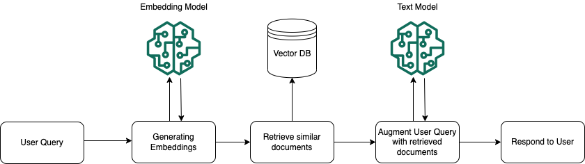
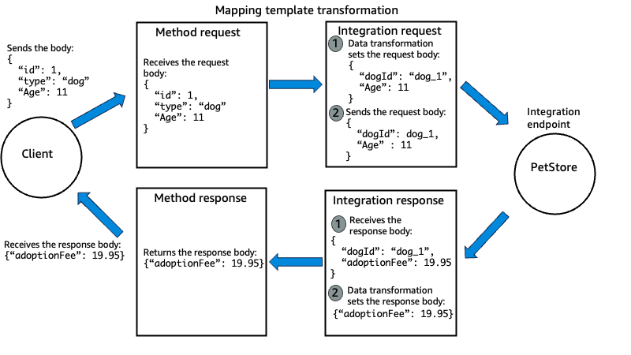
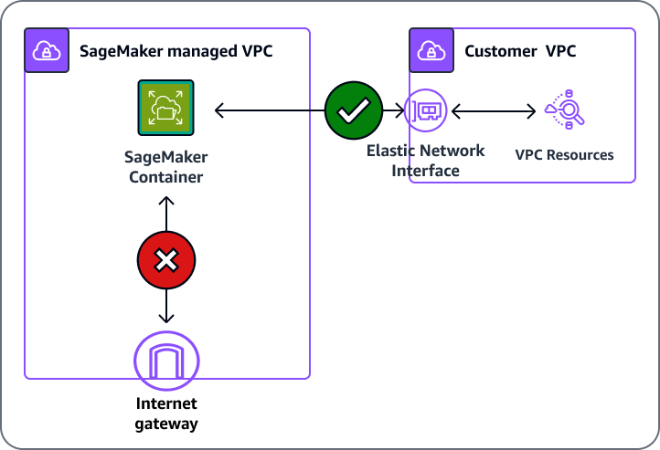
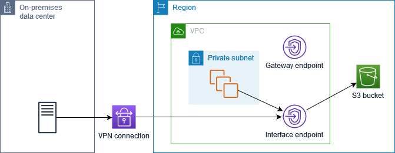
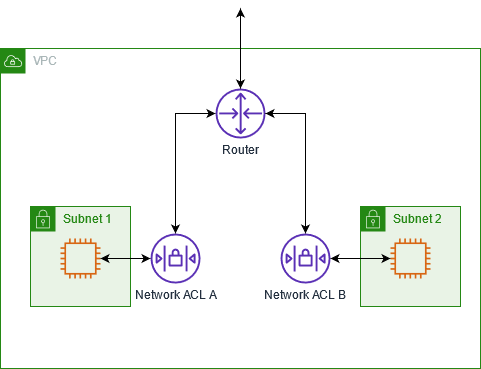
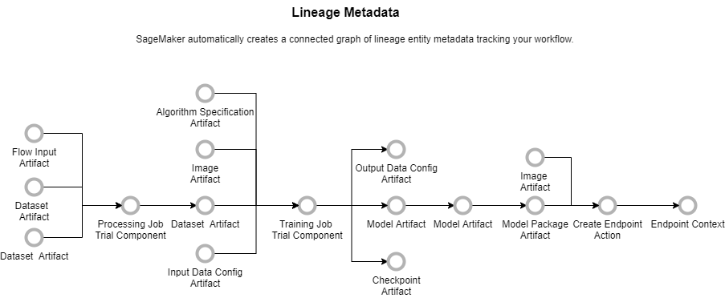

Domain 3: AI Safety, Security, and Governance
What this domain asks you to do
The exam guide lists the tasks and skills below. Each task has its own section in this module. Each skill has its own heading in that section.
Task 3.1: Implement input and output safety controls.
- Skill 3.1.1. Develop comprehensive content safety systems to protect against harmful user inputs to FMs (for example, by using Amazon Bedrock guardrails to filter content, Step Functions and Lambda functions to implement custom moderation workflows, real-time validation mechanisms).
- Skill 3.1.2. Create content safety frameworks to prevent harmful outputs (for example, by using Amazon Bedrock guardrails to filter responses, specialized FM evaluations for content moderation and toxicity detection, text-to-SQL transformations to ensure deterministic results).
- Skill 3.1.3. Develop accuracy verification systems to reduce hallucinations in FM responses (for example, by using Amazon Bedrock Knowledge Base to ground responses and perform fact-checking, confidence scoring and semantic similarity search for verification, JSON Schema to enforce structured outputs).
- Skill 3.1.4. Create defense-in-depth safety systems to provide comprehensive protection against FM misuse (for example, by using Amazon Comprehend to develop pre-processing filters, Amazon Bedrock to implement model-based guardrails, Lambda functions to perform post-processing validation, API Gateway to implement API response filtering).
- Skill 3.1.5. Implement advanced threat detection to protect against adversarial inputs and security vulnerabilities (for example, by using prompt injection and jailbreak detection mechanisms, input sanitization and content filters, safety classifiers, automated adversarial testing workflows).
Task 3.2: Implement data security and privacy controls.
- Skill 3.2.1. Develop protected AI environments to ensure comprehensive security for FM deployments (for example, by using VPC endpoints to isolate networks, IAM policies to enforce secure data access patterns, AWS Lake Formation to provide granular data access, CloudWatch to monitor data access).
- Skill 3.2.2. Develop privacy-preserving systems to protect sensitive information during FM interactions (for example, by using Amazon Comprehend and Amazon Macie to detect personally identifiable information [PII], Amazon Bedrock native data privacy features, Amazon Bedrock guardrails to filter outputs, Amazon S3 Lifecycle configurations to implement data retention policies).
- Skill 3.2.3. Create privacy-focused AI systems to protect user privacy while maintaining FM utility and effectiveness (for example, by using data masking techniques, Amazon Comprehend PII detection, anonymization strategies for sensitive information, Amazon Bedrock guardrails).
Task 3.3: Implement AI governance and compliance mechanisms.
- Skill 3.3.1. Develop compliance frameworks to ensure regulatory compliance for FM deployments (for example, by using SageMaker AI to develop programmatic model cards, AWS Glue to automatically track data lineage, metadata tagging for systematic data source attribution, CloudWatch Logs to collect comprehensive decision logs).
- Skill 3.3.2. Implement data source tracking to maintain traceability in GenAI applications (for example, by using AWS Glue Data Catalog to register data sources, metadata tagging for source attribution in FM-generated content, CloudTrail for audit logging).
- Skill 3.3.3. Create organizational governance systems to ensure consistent oversight of FM implementations (for example, by using comprehensive frameworks that align with organizational policies, regulatory requirements, and responsible AI principles).
- Skill 3.3.4. Implement continuous monitoring and advanced governance controls to support safety audits and regulatory readiness (for example, by using automated detection for misuse, drift, and policy violations, bias drift monitoring, automated alerting and remediation workflows, token-level redaction, response logging, AI output policy filters).
Task 3.4: Implement responsible AI principles.
- Skill 3.4.1. Develop transparent AI systems in FM outputs (for example, by using reasoning displays to provide user-facing explanations, CloudWatch to collect confidence metrics and quantify uncertainty, evidence presentation for source attribution, Amazon Bedrock agent tracing to provide reasoning traces).
- Skill 3.4.2. Apply fairness evaluations to ensure unbiased FM outputs (for example, by using pre-defined fairness metrics in CloudWatch, Amazon Bedrock Prompt Management and Amazon Bedrock Prompt Flows to perform systematic A/B testing, Amazon Bedrock with LLM-as-a-judge solutions to perform automated model evaluations).
- Skill 3.4.3. Develop policy-compliant AI systems to ensure adherence to responsible AI practices (for example, by using Amazon Bedrock guardrails based on policy requirements, model cards to document FM limitations, Lambda functions to perform automated compliance checks).
Source: https://docs.aws.amazon.com/aws-certification/latest/ai-professional-01/ai-professional-01-domain3.html
Task 3.1: Implement input and output safety controls
After this section, you can read a safety scenario, find the constraint that decides the control, and reject each wrong option with one reason. Most wrong answers in this task come from three names that sound alike: Amazon Bedrock Guardrails, Amazon Comprehend, and Amazon Macie. Learners also treat every policy inside a guardrail as a separate "filter." This section puts that comparison at the center. Each service section tells you when to choose it, when not to choose it, and the limits that decide the answer.
The deciding constraint
Start from the scenario, not from the list of services. Ask where the text lives, what must happen to it, and whether a model call is part of the path. A stored file and a live chat message point to different controls. The tree follows that order.
control"] -->|data already sits in
S3| B["Amazon Macie"] A -->|text in a live
request| C["Which control acts on the
text"] A -->|answer must match a
source| D["Contextual grounding check"] A -->|answer must follow
written rules| E["Automated Reasoning checks"] A -->|output must match a
schema| F["JSON Schema structured
output"] C -->|policy decision on
prompt or answer| G["Bedrock Guardrails"] C -->|exact PII spans
before a model call| H["Amazon Comprehend PII"] C -->|harmful text inside
a tool result| I["ApplyGuardrail in the
workflow"] G -->|model call in the
path| J["Attach to Converse or
InvokeModel"]
Figure: Read where the text lives first, then the action that must happen to it.
Signal words point to each branch. Use them to narrow the options before you read the details.
- Signal words for Macie: stored, S3 bucket, inventory, at rest, discovery. Macie works on stored objects, not on a live message.
- Signal words for Comprehend: locate, offsets, redact, entity, English or Spanish. Comprehend returns entities, and your code applies the change.
- Signal words for guardrails: block, refuse, mask, harmful, denied topic, blocked message. A guardrail returns a policy decision.
- Signal words for grounding: supported by the passage, hallucination, source document, relevant to the question.
- Signal words for rules: eligibility rule, policy document, must follow the policy, formal logic.
- Signal words for schema: JSON, required fields, fixed format, parseable output.
Exam tip: Words that name a place decide the service first. Examples are a bucket, a tool result, or a request.
Guardrails versus Comprehend versus Macie versus filters
This is the center comparison of the task. Macie and Comprehend read data, but they do different jobs. Bedrock Guardrails enforces a policy on text in a model call or in an ApplyGuardrail request. The four filters are policy types inside one guardrail. The table gives a yes or no test for the three services.
| Property | Bedrock Guardrails | Amazon Comprehend | Amazon Macie |
|---|---|---|---|
| Checks text in a live request | Yes | Yes | No |
| Scans objects already stored in S3 | No | No | Yes |
| Blocks a request or response by policy | Yes | No | No |
| Masks or redacts text | Yes | Yes | No |
Read each row as a question. If the answer for a service is no, reject that service for the property in the stem. Two services can be right in one design, but the stem usually asks for one property.
the risk"] -->|stored S3 data to
find| B["Amazon Macie"] A -->|text to locate or
redact| C["Amazon Comprehend"] A -->|policy on a model
call| D["Bedrock Guardrails"] D -->|harm category with a
strength| E["Content filters"] D -->|exact term or phrase| F["Word filters"] D -->|a subject to refuse| G["Denied topics"] D -->|personal data or
custom pattern| H["Sensitive information
filters"]
Figure: Guardrails holds four filter types. Macie and Comprehend sit outside it.
Guardrails versus Comprehend
model traffic| B["Bedrock Guardrails"] A -->|locate PII with
offsets| C["Amazon Comprehend PII"] B -->|model call in the
path| D["Guardrail on Converse or
InvokeModel"] B -->|no model call in the
path| E["ApplyGuardrail API"] C -->|live text up to 100
KB| F["DetectPiiEntities in your
code"] C -->|many files or a
redacted copy| G["Asynchronous Comprehend
job"]
Figure: Guardrails decides on policy. Comprehend locates the entities.
- Purpose. Guardrails enforces a policy on prompts and answers. Comprehend finds, scores, or redacts entities in text.
- Input. Guardrails takes a prompt, an answer, or text sent to ApplyGuardrail. Comprehend takes one document in real time, or a batch of files in S3.
- Output or effect. Guardrails allows, blocks, masks, or reports. Comprehend returns entity types, scores, and offsets, or a redacted copy from a batch job.
The one question to ask yourself: Does the requirement name a policy outcome, or a location of data?
Rule: If the requirement is to refuse or mask text on policy, use Guardrails. If the requirement is to locate PII spans or write a redacted file, use Comprehend with your own code.
Trap: Choosing Comprehend because the stem says PII. When the same stem also says block harmful content and apply one policy across models, Comprehend alone is incomplete.
Comprehend versus Macie
buckets| B["Amazon Macie"] A -->|text passed in an
API call| C["Amazon Comprehend"] B -->|inventory and
sensitive data
findings| D["Findings to EventBridge"] C -->|redacted copy of
stored files| E["Asynchronous redaction job"] C -->|entities for one
live text| F["Real-time
DetectPiiEntities"]
Figure: Storage location decides Macie. Text passed to an API decides Comprehend.
- Purpose. Macie discovers and reports sensitive data in S3. Comprehend detects and redacts entities in text you send.
- Input. Macie takes S3 general purpose buckets and objects. Comprehend takes text strings or documents that your code passes in.
- Output or effect. Macie produces findings, statistics, and inventory. Comprehend produces entities with scores and offsets, or a redacted copy.
The one question to ask yourself: Is the data sitting in storage, or passing through my code?
Rule: Choose Macie to find sensitive data in S3 storage. Choose Comprehend to act on text in a request or a pipeline step.
Trap: Using Macie to protect a live prompt. Macie evaluates stored S3 objects and does not sit in the chat path.
Guardrails versus its filters
matches the risk"] -->|harm category with
strength| B["Content filters"] A -->|exact term from a
list| C["Word filters"] A -->|a subject area to
refuse| D["Denied topics"] A -->|personal data or
regex pattern| E["Sensitive information
filters"] B -->|input and output
strength| F["Strength setting"] E -->|block or anonymize| G["Action setting"]
Figure: Match the risk type first, then set the strength or the action.
- Purpose. Content filters target harm categories. Word filters target exact terms. Denied topics target subjects. Sensitive information filters target personal data and patterns.
- Input. Content filters read text and images by category. Word filters match exact text. Denied topics use a natural language definition. Sensitive filters use PII types or regex.
- Output or effect. Content filters block by category and strength. Word filters and denied topics block. Sensitive filters block or anonymize.
The one question to ask yourself: Is the risk a category, a term, a subject, or a data format?
Rule: Use content filters for harm categories, word filters for named terms, denied topics for subjects, and sensitive information filters for personal data formats.
Exam tip: The strength setting belongs to category policies. A stem that asks for a strength points to content filters or the prompt attack category, not to a word list.
Trap: A denied topic for a list of banned words. Denied topics use natural language. A fixed list belongs in word filters.
Source: https://docs.aws.amazon.com/bedrock/latest/userguide/guardrails-components.html, https://docs.aws.amazon.com/bedrock/latest/userguide/guardrails-sensitive-filters.html, https://docs.aws.amazon.com/bedrock/latest/userguide/guardrails-prompt-attack.html.
ApplyGuardrail versus a guardrail on the model call
policy"] -->|model call in the
path| B["Guardrail on Converse or
InvokeModel"] A -->|no model call in the
path| C["ApplyGuardrail API"] B -->|blocked message or
masked answer| D["Returned to the user"] C -->|action returned to
your code| E["Your code skips or masks
the text"]
Figure: The model call decides which path to use. The policy stays the same.
The one question to ask yourself: Is a foundation model invoked for this text?
Rule: Use both when one workload has a model path and a non-model path under one policy version.
Trap: Calling ApplyGuardrail on the model answer and assuming the prompt was checked. Each direction needs its own check in that design.
Real-time versus asynchronous Comprehend
question"] -->|answer needed in the
same call| B["Real-time analysis"] A -->|many files and
output can wait| C["Asynchronous batch job"] B -->|one document up to
100 KB| D["Entities with scores and
offsets"] C -->|redacted copy
written to output| E["Redacted files in S3"]
Figure: Timing words in the stem decide the mode.
The one question to ask yourself: Must the answer exist before the model call returns?
Rule: Use real-time analysis on a live path. Use the asynchronous job for large files, batch work, or a redacted copy.
Trap: Using a real-time list of locations as if it were redacted text. Your code still has to replace the spans.
Grounding versus Automated Reasoning versus citations
supplied passage| B["Contextual grounding check"] A -->|follows written
rules with
conditions| C["Automated Reasoning checks"] A -->|user must see the
source| D["Citations"] B -->|grounding and
relevance scores| E["Block or flag by threshold"] C -->|findings for your
code| F["Rewrite escalate or ask
again"]
Figure: Pick the layer that matches the question the stem asks.
The one question to ask yourself: Is the claim wrong against a passage, against a rule, or is the source simply missing?
Rule: Use grounding for passage support, Automated Reasoning for formal rules, and citations for traceability.
Trap: Treating a citation as proof that the claim is correct. A citation shows where the text came from, not that the claim is supported.
Source: https://docs.aws.amazon.com/bedrock/latest/userguide/guardrails-contextual-grounding-check.html, https://docs.aws.amazon.com/bedrock/latest/userguide/guardrails-automated-reasoning-checks.html, https://docs.aws.amazon.com/bedrock/latest/userguide/guardrails-use-independent-api.html, https://docs.aws.amazon.com/comprehend/latest/dg/how-pii.html.
Skill 3.1.1: Protect the model from harmful user inputs
This skill asks for a system that screens user input before the model reads it. The named tools are Bedrock Guardrails, Step Functions, Lambda, and real-time validation. Use a managed guardrail when the policy is a standard set of categories, topics, and terms. Add Lambda or Step Functions when the team needs its own business rule or a review path.
model"] -->|Standard policy| N2["Managed guardrail"] N1 -->|Own business rule| N3["Lambda or Step Functions"] N3 -->|Review path| N4["Custom moderation workflow"]
Figure: A managed guardrail covers standard policies, while Lambda or Step Functions handle business rules and review paths.
Rule: Put a managed guardrail on the model call first. Add custom code only for a rule that the guardrail cannot express.
Exam tip: Read the phrase custom moderation workflow as orchestration. Read harmful content on every model call as a guardrail.
The sections for this skill are Amazon Bedrock Guardrails, Amazon Bedrock model-based guardrails, AWS Step Functions, AWS Lambda, real-time validation mechanisms, and custom moderation workflows.
Amazon Bedrock Guardrails
The service gives you a managed set of safety policies. You create a guardrail once, and you attach it to model calls or to ApplyGuardrail requests. A guardrail holds one or more policies and a message for blocked prompts. Each guardrail can hold grounding checks, Automated Reasoning checks, sensitive information filters, word filters, denied topics, and content filters. Prompt attack detection is offered inside the content filter category.
message"] N2 -->|Attach to| N3["Model calls"] N2 -->|Attach to| N4["ApplyGuardrail requests"]
Figure: One guardrail holds the policies and attaches to model calls or to ApplyGuardrail requests.
Each policy has an action. Block returns your blocked message. Detect, which the API calls NONE, returns a finding and changes nothing. Masking, which the API calls ANONYMIZE, applies to sensitive information filters only.
Rule: Choose Guardrails when one managed policy must cover prompts, answers, or both.
The same guardrail can be attached to every model call in a workload. A policy change then means a new guardrail version, not an edit in each service. This is the answer when a stem asks for consistent controls across models or for the least custom moderation code.
Trap: Guardrails is not a batch redaction tool for files in S3. It checks text at request time, in a model call or in an ApplyGuardrail request.
Trap: Blocked content appears as plain text in model invocation logs when logging is on. The guardrail does not clean your audit logs.
Trap: Assuming the content filters cover reasoning content blocks. The guardrail documentation says the content filters exclude reasoning content. Design a separate check for that text.
Guardrails pairs with Comprehend when exact spans must change before a model call. It pairs with Lambda or Step Functions when a workflow must branch on the result. It pairs with invocation logging when auditors need evidence. It also attaches to Agents and Knowledge Bases.
- Content filter strengths run from NONE to HIGH. Input and output strengths can differ.
- Standard tier extends content filters to code comments, names, and string literals.
- Prompt leakage detection needs the Standard tier.
- Contextual grounding thresholds range from 0 to 0.99. A threshold of 1 is not valid.
- Guardrail identifier and version are both needed on each call. DRAFT is the working version.
- Not in source: the maximum number of policies, words, or topics in one guardrail. Not in source: the exact confidence level behind each strength.
Source: https://docs.aws.amazon.com/bedrock/latest/userguide/guardrails-components.html, https://docs.aws.amazon.com/bedrock/latest/userguide/guardrails-use-independent-api.html, https://docs.aws.amazon.com/bedrock/latest/userguide/guardrails-prompt-attack.html. Sundog slide page 54 lists the same policy families.
Amazon Bedrock model-based guardrails
A model call names the guardrail in its configuration. On Converse, the guardrailConfig object holds the guardrail identifier, the version, and an optional trace setting. On InvokeModel, the request carries the same identifier and version, and user text uses input tags. When a guardrail intervenes, Converse returns the stop reason guardrail_intervened.
Block and mask both return guardrail_intervened. A masked answer contains placeholders such as NAME or EMAIL. The trace shows the action for each entry.
Rule: Attach the guardrail to every model path. Use ApplyGuardrail only for text that does not reach a model.
Trap: Reading only the stop reason to tell masking from blocking. Read the trace action field, which shows ANONYMIZED or BLOCKED.
Trap: Enabling trace and logging the output without care. The trace holds unmasked values, so treat it as sensitive.
When tool use is in the request, the guardrail does not evaluate every field. It skips tool results sent by your application, tool definitions, and tool call arguments generated by the model. Text in the user message and the model answer is evaluated.
- Not evaluated: toolResult content, toolSpec descriptions and input schemas, and toolUse input generated by the model.
- Evaluated: text, system prompts marked for guarding, and model responses.
- Converse guard blocks: once a guardContent block appears, the docs say only guardContent blocks are evaluated.
Figure: The same guardrail checks the input and the output of one model call.
Source: https://docs.aws.amazon.com/bedrock/latest/userguide/guardrails-use-converse-api.html, https://docs.aws.amazon.com/bedrock/latest/userguide/guardrails-tagging.html, https://docs.aws.amazon.com/bedrock/latest/userguide/guardrails-sensitive-filters.html.
AWS Step Functions
AWS Step Functions runs a state machine. Each state is one step, such as a model call, a Lambda function, or a choice. Step Functions has optimized integrations for Amazon Bedrock. The InvokeModel integration accepts a Body of up to 256 KiB. Larger payloads go through an S3 input location.
Rule: Choose Step Functions when a moderation flow has several ordered steps, branches, or retries across services.
Trap: Using a multi-step workflow for one inline check in a live chat turn. A direct call to a guardrail or ApplyGuardrail is simpler and faster for one check.
A typical design runs an input screen, calls the model when the screen passes, runs an output screen, and returns the answer. The Choice state sends each path to the next step. The tree shows one example.
machine"] -->|first check| B["Input screen in Lambda"] B -->|guardrail intervened| C["Return blocked message"] B -->|no action| D["Invoke model through
Bedrock task"] D -->|output check fails| E["Send to review queue"] D -->|output check passes| F["Return the answer"]
Figure: A Choice state routes each result to one branch.
Source: https://docs.aws.amazon.com/step-functions/latest/dg/connect-bedrock.html. Sundog slide page 373 describes Step Functions with Bedrock and chained model calls.
AWS Lambda
AWS Lambda runs your code in response to events and API calls. Event functions run for up to 15 minutes per invocation by default. Common triggers include API Gateway, Amazon S3, Amazon SQS, and EventBridge. Each invocation runs independently.
rule"]
Figure: Lambda suits checks that need your own code, while a managed policy suits standard PII and harmful content.
Rule: Choose Lambda when a check needs your own code, such as a business rule or a lookup.
Trap: A Lambda regex check as the first choice when the stem asks for the least custom code. A managed policy is the better answer for standard PII and harmful content.
Trap: Lambda checks do not understand meaning unless you add a model or a managed service call. A pattern match alone misses rephrased attacks.
Lambda also runs after the model. It can check an answer against a rule, reject a field, or call ApplyGuardrail on the output. Sundog slide page 118 shows Lambda calling Comprehend before data reaches Bedrock, for redaction, entity extraction, and language detection.
Source: https://docs.aws.amazon.com/lambda/latest/dg/welcome.html. Sundog slide page 118.
Real-time validation mechanisms
Real-time validation runs inside the request. It checks size, format, language, and policy before the model call, and again before the answer leaves the system. Options include API Gateway request checks, a Lambda function, ApplyGuardrail, and Comprehend PII detection called in the same request.
waits"] -->|Check before model| N2["Size format language
policy"] N2 -->|Model call| N3["Model answer"] N3 -->|Check again| N4["Answer checked before
release"]
Figure: Real-time validation checks the request before the model call and checks the answer again before it leaves.
Rule: Use real-time validation when the user waits for the answer and a bad answer must not reach that user.
Trap: A batch scan that runs after the fact. It finds problems, but the live answer is already sent.
Sundog slide page 57 describes the same pattern for tokens and text. Filter sensitive tokens before the request reaches the model, and filter the output that may have slipped through. Guardrails may not be enough on its own, so the design can add a custom handler.
Source: https://docs.aws.amazon.com/bedrock/latest/userguide/guardrails-use-independent-api.html. Sundog slide page 57. Not in source: validation latency for each check.
Custom moderation workflows
A custom moderation workflow is an ordered set of checks with branches. Each check returns a decision that routes the request. Step Functions or Lambda hold the logic, and a managed control performs each check.
guardrail"] -->|Branch on action| N2["Borderline cases"] N2 -->|Send to review| N3["Review queue with request
ID"] N2 -->|Log decision| N4["Log with guardrail version"] N4 -->|Before release| N5["Screen final answer again"]
Figure: A custom workflow branches on the guardrail action, logs each decision, and screens the final answer again.
Rule: Build a custom workflow only when the business needs a branch that a single guardrail action cannot express.
Use this order when you design the workflow.
- Screen the input with a guardrail or ApplyGuardrail.
- Branch on the action in code or in a Choice state.
- Send borderline cases to a review queue with the request identifier.
- Log each decision with the guardrail version used.
- Screen the final answer again before release.
Trap: A custom workflow that replaces the guardrail on the model call. The workflow adds steps, but the model call still needs its own policy check.
Skill 3.1.2: Protect users from harmful model outputs
This skill asks for controls on what the model returns. The named tools are Bedrock Guardrails for filtering responses, specialized model evaluations for moderation and toxicity, and text-to-SQL transformations for results that must be deterministic. Filtering responses is a runtime control. Evaluations are offline checks for a release. A query step is a design choice for data answers.
answer"] N1 -->|Before a release| N3["Model evaluations"] N1 -->|Data answers| N4["Text to SQL query step"]
Figure: Runtime filters, release evaluations, and query steps each control a different part of the output.
Rule: Filter each answer at runtime with a guardrail. Use evaluations to decide whether a release is safe to ship.
Exam tip: If the stem says before the user sees the answer, pick a runtime control. If it says before the release or across a test set, pick an evaluation.
The sections for this skill are content filters, word filters, denied topics, specialized FM evaluations, Amazon Comprehend toxicity detection, and text-to-SQL transformations.
Content filters
Content filters detect harmful text or image content in prompts and responses. Prompt Attack sits in the category set alongside Violence, Misconduct, Sexual, Insults, and Hate. Each category has an input strength and an output strength. The strength levels run from NONE to HIGH, with LOW and MEDIUM between them.
separately"] N1 -->|Harm categories| N4["Violence Misconduct and
more"] N4 -->|Also includes| N5["Prompt Attack category"]
Figure: Each content filter category has its own input and output strength, from NONE to HIGH.
Rule: Choose content filters when the risk is harmful language in a known category and the team wants a managed strength setting.
Use content filters for abusive language from customers, sexual content in a public assistant, or violent text in a generated summary. Raise the strength when the business accepts more false positives. Lower it when blocked answers cost more than harmful ones.
Trap: Content filters do not match a fixed list of words. Use word filters for brand names and banned phrases.
Trap: Content filters do not read tool results, tool definitions, or tool call arguments. The guardrail documentation lists those fields as not evaluated.
Source: https://docs.aws.amazon.com/bedrock/latest/userguide/guardrails-components.html, https://docs.aws.amazon.com/bedrock/latest/userguide/guardrails-use-converse-api.html.
Word filters
Word filters block exact words or phrases. A team adds custom words, such as competitor names, or turns on the managed profanity list. Matching is exact, so the filter does not read meaning.
phrases"] N2 -->|Managed list| N4["Profanity list"] N1 -->|Rephrased insult| N5["Content filters read
meaning"]
Figure: Word filters match exact words, while content filters read meaning across the harm categories.
Rule: Choose word filters when the banned item is a list of exact terms or the managed profanity list.
Trap: Word filters miss a rephrased insult. Content filters read meaning across the harm categories.
Trap: Word filters for personal data formats such as phone numbers. Use sensitive information filters or a custom regex for those.
Source: https://docs.aws.amazon.com/bedrock/latest/userguide/guardrails-components.html.
Denied topics
A denied topic is a subject that the application must refuse. You describe it in natural language and can add sample phrases. The guardrail uses that definition to decide whether a prompt or an answer falls inside the topic.
refuse"] -->|Plain language| N2["Denied topic definition"] N2 -->|Sample phrases| N3["Guardrail checks prompt or
answer"] N3 -->|Inside the topic| N4["Refuse the request"]
Figure: A denied topic is defined in natural language, and the guardrail checks prompts and answers against it.
Rule: Choose denied topics when the rule is a subject area, such as investment advice, and not a fixed word or pattern.
Trap: Denied topics for exact names or identifiers. A word filter or a regex is the exact control.
Trap: Denied topics as a truth check. A topic block does not show that an answer is correct. Use grounding or Automated Reasoning for correctness.
Source: https://docs.aws.amazon.com/bedrock/latest/userguide/guardrails-components.html.
Specialized FM evaluations for content moderation and toxicity
A model evaluation job runs a set of prompts through a generator model and scores the answers. With a judge model, a second model scores each answer and explains the score. The job writes its report to an S3 bucket. The evaluation runs on a dataset, not on live traffic.
dataset"] -->|Generator answers| N2["Answers scored"] N2 -->|Judge model| N3["Score with explanation"] N3 -->|Report written| N4["Report in S3 bucket"]
Figure: A judge model scores a dataset of answers and writes its report to S3, not on live traffic.
Rule: Use a judge-based evaluation to measure moderation quality across a test set before a release or a model change.
Trap: Using an evaluation job as a live moderation control. It scores outputs after the fact and does not stop one answer.
Trap: Assuming a judge score is a fixed fact. It is a model-based score, so check it against human review on a sample.
Not in source: the exact built-in metric names for toxicity or harmfulness in the pages I fetched. Check the metrics page before you name one in an answer.
Source: https://docs.aws.amazon.com/bedrock/latest/userguide/evaluation-judge.html. Sundog slide page 431 describes measuring hallucination rate and faithfulness with evaluations.
Amazon Comprehend toxicity detection
The Comprehend DetectToxicContent operation scores text for toxicity. It takes up to 10 text segments, each up to 1 KB, with a list limit of 10 KB. It returns labels with scores and a toxicity score for each segment. The request is synchronous.
check"] -->|Check first| N2["Check the availability
notice"] N2 -->|Notice blocks| N3["Use Bedrock Guardrails"] N2 -->|Notice clears| N4["Comprehend toxicity call"] N4 -->|Score is one input| N5["Decision still needs a
threshold"]
Figure: Confirm the availability notice first, since Bedrock Guardrails is the documented path for a new account.
The API reference names English as the only currently supported language. The page also shows a notice. The notice says Comprehend prompt safety classification is no longer available to new customers. The AWS migration guide maps that work to Bedrock Guardrails.
Rule: For a new account, use Bedrock Guardrails for prompt safety and harmful content. Use Comprehend toxicity only after you confirm the notice does not block your account.
Trap: Choosing Transcribe toxicity for chat text. The Transcribe toxicity feature is for voice, with speech cues. Sundog slide page 113 describes it.
Trap: Choosing Comprehend toxicity as the only safety layer. A toxicity score is one input to a decision. It does not change the answer by itself.
Source: https://docs.aws.amazon.com/comprehend/latest/APIReference/API_DetectToxicContent.html, https://docs.aws.amazon.com/comprehend/latest/dg/comprehend-availability-change.html. Sundog slide page 113.
Text-to-SQL transformations
A Bedrock knowledge base over a structured data store turns a natural language question into a query. The GenerateQuery operation returns the SQL, and you can call it separately from retrieval. Retrieve and RetrieveAndGenerate run the converted query and return rows or a generated answer.
Figure: The database returns the figures. The model writes only the query text.
Rule: Choose a query step when the answer must come from rows in a database. Let the database produce the figures, not the model.
Use this order when you build the step.
- Allow read statements against approved tables only.
- Run the query with a role that has read access.
- Set a row limit and a time limit before execution.
- Format the answer from the returned rows only.
Trap: Claiming that text-to-SQL is deterministic because the database is. The model can still write a wrong query. The AWS page does not state a determinism guarantee, so do not claim one.
Source: https://docs.aws.amazon.com/bedrock/latest/userguide/knowledge-base-build-structured.html, https://docs.aws.amazon.com/bedrock/latest/APIReference/API_agent-runtime_Retrieve.html.
Skill 3.1.3: Reduce hallucinations in model responses
This skill asks for accuracy checks. The named tools are Bedrock Knowledge Bases for grounding, fact-checking, confidence scoring, semantic similarity search, and JSON Schema for structured output. Retrieval supplies the source, a grounding check tests support, a score needs a threshold, and a schema tests shape.
source"] N2 -->|Grounding check| N3["Tests if answer is
supported"] N3 -->|Score| N4["Needs a threshold"] N1 -->|Output shape| N5["Schema tests the shape"]
Figure: Each accuracy control tests a different property, from support in the source to the shape of the output.
Rule: Name the property that must hold, then pick the check that tests that property.
Exam tip: Words such as supported by the source point to grounding. Words such as valid JSON or required fields point to structured output. Neither word proves that a claim is true.
Amazon Bedrock Knowledge Bases
This service runs retrieval-augmented generation. It converts your documents into chunks and embeddings in a pre-processing step, and it stores the vectors in a vector store. At query time, it finds similar chunks and gives them to the model. The Retrieve operation returns each result with its content, source location, metadata, and a score.
base"] -->|Split into chunks| N2["Chunks become vectors"] N2 -->|Stored for search| N3["Vector database"] N4["User query"] -->|Query embedding| N3 N3 -->|Closest documents| N5["Text model answers with
them"]
Figure: Documents are split into chunks and stored as vectors, and each query searches those vectors before the model answers.
The figure below shows the runtime flow. A user query becomes an embedding. The vector database returns similar documents, and the text model answers with them.

The user query first goes to an embedding model. The vector database returns the documents that are closest to that embedding. The text model receives the query with those documents, and then it answers the user. This flow has no grounding check, so add one when the answer must be verified.
The ingestion flow is the second figure. Each document is split into chunks, and an embedding model turns each chunk into a vector. The vectors are stored in the vector database that the runtime flow searches.

Rule: Use a knowledge base when the answer must come from your documents and the user must see citations.
Retrieve accepts a guardrail configuration, so the guardrail can apply to the retrieved content. It also accepts a user context for access control, so results only include documents that the user may read.
Trap: Treating a citation as proof of correctness. A citation shows the passage the model used, not that the answer follows from it.
Trap: Using the retrieval score as a truth score. It describes how closely a chunk matches the query.
Source: https://docs.aws.amazon.com/bedrock/latest/userguide/knowledge-base.html, https://docs.aws.amazon.com/bedrock/latest/userguide/kb-how-it-works.html, https://docs.aws.amazon.com/bedrock/latest/APIReference/API_agent-runtime_Retrieve.html. Sundog slide page 30 lists the RAG pros and cons, including sensitivity to retrieval relevance.
Contextual grounding check
A contextual grounding check scores a model response on two measures. Grounding asks whether the response is supported by the source you supply. Relevance asks whether the response answers the query. Each measure has a threshold between 0 and 0.99. A response below the threshold is blocked or flagged.
Figure: The grounding check scores support and relevance, and a score below the threshold blocks or flags the response.
The check needs three inputs. The grounding source is the passage. The query is the user question. The content to guard is the model response. The check runs on the output, not on the prompt.
Rule: Choose the grounding check when the answer must follow a supplied passage.
Limits are 100,000 characters for the source, 1,000 characters for the query, and 5,000 characters for the response. The Classic tier is strict about information that the source does not state. It supports English, French, and Spanish, and it does not support conversational use. The Standard tier supports reasoning and conversational content. It needs cross-Region inference.
Trap: Treating the grounding score as a measure of word overlap. Sundog slide page 54 describes it as a similarity measure, but the AWS page describes support and relevance. A grounded answer can use different words.
Trap: A question with no source passage. The check needs a source, so it cannot score grounding for general knowledge.
Trap: A grounding score of 1. The threshold must stay between 0 and 0.99.
Source: https://docs.aws.amazon.com/bedrock/latest/userguide/guardrails-contextual-grounding-check.html. Sundog slide page 54 describes grounding and relevance.
Automated Reasoning checks
Automated Reasoning checks validate model content against formal rules. You upload a policy document in natural language. Bedrock extracts rules and variables from it. At runtime, the check returns findings. Each finding says whether the content is valid under the rules, with feedback for your code.
escalate"]
Figure: The check returns findings from the policy rules, and your code decides what happens next.
Rule: Choose Automated Reasoning checks when written rules with conditions decide the answer and an audit needs a traceable reason.
A benefits assistant that applies an eligibility rule is a clean case. The findings name the rule and the variables that support the result. Your code then rewrites the answer, asks a follow-up question, or escalates it.
Trap: Expecting the check to block content by itself. It runs in detect mode, so your code must read the findings and act.
Trap: Using the check for prompt injection or off-topic text. The docs say it does not detect either risk.
Trap: Using the check on a streamed answer. It needs the complete response.
Source: https://docs.aws.amazon.com/bedrock/latest/userguide/guardrails-automated-reasoning-checks.html. Sundog slide page 55 describes the policy document flow.
Confidence scoring
Several AWS controls return a score. Comprehend returns a score for each PII entity and each toxicity label. Contextual grounding returns a grounding score and a relevance score. Retrieve returns a score for each result. Each score is a number from a model, and a threshold turns it into a decision.
Figure: A score becomes a decision only after a threshold is applied by code or by a guardrail action.
Rule: Choose a threshold for each use case, and test it on your own data before you change a guardrail tier.
The guardrail documentation gives 0.7 as a starting point for Standard tier conversation checks. It says the same response can score differently in each tier, so retest after a tier change.
Trap: Treating a high score as a yes for the whole answer. A score measures one property, such as grounding, and says nothing about rules or facts the check did not read.
Trap: Using a score with no action. A score alone blocks nothing. Your code or a guardrail action must apply the threshold.
Not in source: a universal threshold value for Comprehend entities.
Source: https://docs.aws.amazon.com/bedrock/latest/userguide/guardrails-contextual-grounding-check.html, https://docs.aws.amazon.com/comprehend/latest/dg/how-pii.html, https://docs.aws.amazon.com/bedrock/latest/APIReference/API_agent-runtime_Retrieve.html.
Semantic similarity search
Semantic similarity search compares an embedding of the query with embeddings of stored chunks. The closest chunks are returned. A knowledge base uses this search as its retrieval step. The figure for the runtime flow shows the embedding step and the vector lookup.
answer"] N2 -->|Not proof| N4["Closeness does not prove
support"]
Figure: Similarity search returns candidate passages, and a grounding check still tests the answer.
Rule: Use similarity search to find candidate passages for a check. Then run a grounding check on the answer against those passages.
Trap: Using similarity as proof that an answer is supported. A passage can be close in meaning and still not support a claim.
Trap: Using a similarity result as a fact-check on its own. The search returns text, not a verdict.
Source: https://docs.aws.amazon.com/bedrock/latest/userguide/kb-how-it-works.html, https://docs.aws.amazon.com/bedrock/latest/userguide/guardrails-contextual-grounding-check.html.
JSON Schema structured output
Structured outputs make a model follow a JSON schema. On Converse, the outputConfig textFormat field holds the schema. On InvokeModel, the request field depends on the model family. Strict tool use adds a flag on each tool definition that checks tool names and inputs against the schema.
Reasoning"] N2 -->|Max string length| N5["Code check"]
Figure: A schema fixes the shape of the output, while facts and string limits need other checks.
The supported schema subset is Draft 2020-12 with limits. Recursive schemas, external references, numeric limits, string length limits, and additionalProperties set to anything other than false are not supported. The first compile can take minutes, and the compiled grammar is cached for 24 hours.
Rule: Choose structured output when the code needs a parseable object with fixed fields and no extra keys.
Use code for checks that the schema cannot express, such as a maximum string length. A schema can also be combined with a guardrail on the same call.
Trap: Treating schema compliance as factual accuracy. A valid object can still contain a wrong value. Use grounding or Automated Reasoning for that.
Trap: Choosing a schema to enforce a maximum string length. The schema subset does not support string length limits.
Source: https://docs.aws.amazon.com/bedrock/latest/userguide/structured-output.html, https://docs.aws.amazon.com/bedrock/latest/userguide/tool-use.html.
Skill 3.1.4: Layer defenses across the request path
This skill asks for defense in depth. The named tools are Comprehend for pre-processing filters, Bedrock for model-based guardrails, Lambda for post-processing validation, and API Gateway for response filtering. Each layer sits at a different point. Put the cheapest exact control first, then the managed policy on the model call, then the rule check on the answer.
path"] -->|Exact control| N2["Comprehend PII spans"] N2 -->|Managed policy| N3["Guardrail on model call"] N3 -->|Rule check| N4["Lambda checks the answer"] N4 -->|Response fields| N5["API Gateway filters
response"]
Figure: Each defense layer sits where its input exists, from PII spans before the model to the response fields.
Rule: Place each control where its input exists. PII spans go before the model call. Policy goes on the model call. Rules go after the answer.
Exam tip: When a stem lists several layers, check each option for the layer it puts in the wrong place. A control in the wrong place is a wrong answer even when the service is right.
The sections for this skill are Amazon Comprehend PII detection, sensitive information filters, the ApplyGuardrail API, Amazon API Gateway response filtering, and Amazon Macie.
Amazon Comprehend PII detection
Amazon Comprehend detects PII entities in English or Spanish text. Real-time analysis takes one document of up to 100 KB of UTF-8 text. Each entity returns a type, a score, and begin and end offsets. Redaction runs as an asynchronous batch job, and the output is a copy of the text with the entities masked.
Figure: Real time analysis returns locations that your code must replace, while a batch job writes a redacted copy.
Rule: Use Comprehend to locate PII spans, or to write a redacted copy before a model reads the text.
A common pattern is a Lambda function that calls Comprehend, replaces the spans, and then calls the model. Sundog slide page 118 describes this pipeline for Knowledge Base ingestion and pre-screening.
Trap: Reading a real-time response as redacted text. It is a list of locations, and your code must replace the spans.
Trap: Expecting Comprehend to block a prompt by itself. It returns findings, and your code decides the action.
Source: https://docs.aws.amazon.com/comprehend/latest/dg/how-pii.html. Sundog slide page 118.
Sensitive information filters
Sensitive information filters are a guardrail policy. They detect PII types in prompts and responses, and they detect custom regex patterns. The action for each type is BLOCK, ANONYMIZE, or NONE. Masks use the type as the placeholder, such as NAME or EMAIL. The filter is probabilistic and depends on context.
filter"] -->|PII types| N2["Detect in prompts and
responses"] N1 -->|Custom regex| N3["Custom identifier pattern"] N2 -->|Action per type| N4["BLOCK ANONYMIZE or NONE"] N4 -->|Anonymize| N5["Mask with type name
placeholder"]
Figure: A sensitive information filter detects PII types or regex patterns, then blocks, masks, or ignores each type.
Rule: Choose sensitive information filters when the policy names PII types or a custom identifier, and the control must sit on model input or output.
Trap: Trusting masking in the logs. The invocation log input keeps the original request. Use CloudWatch log data protection for logs.
Trap: Expecting the filter to read tool results, tool definitions, or tool call arguments. Those fields are not evaluated.
Trap: A lookaround pattern in a custom regex. The filter does not support lookaround matches.
- Regex name is 1 to 100 characters. regex pattern is 1 to 500 characters.
- Input and output actions can differ for each PII type.
- Not in source: the maximum number of regex patterns per guardrail.
Source: https://docs.aws.amazon.com/bedrock/latest/userguide/guardrails-sensitive-filters.html, https://docs.aws.amazon.com/bedrock/latest/userguide/guardrails-use-converse-api.html.
ApplyGuardrail API
ApplyGuardrail checks any text against a guardrail without a model call. The request names the guardrail identifier and version, and the source is INPUT or OUTPUT. The action is GUARDRAIL_INTERVENED or NONE. The outputs hold masked text, the blocked message, or an empty list when nothing happened.
message"] N2 -->|None| N4["Empty list means no action"]
Figure: ApplyGuardrail checks text without a model call and returns masked text, a blocked message, or an empty list.
Rule: Choose ApplyGuardrail when text must meet the same policy, and no model call is part of the path.
Examples include a notice that Lambda assembles, a draft from a rules engine, and a tool result that your application adds to the conversation. The outputScope FULL setting also returns the entries that were not detected, which helps debugging.
Trap: Assuming ApplyGuardrail stops a model call. Your code reads the action and skips the call.
Trap: Reading an empty outputs list as a block. An empty list means no action was taken.
Trap: Expecting FULL output to include word filter or regex entries. The docs say FULL does not apply to those.
Source: https://docs.aws.amazon.com/bedrock/latest/userguide/guardrails-use-independent-api.html.
Amazon API Gateway response filtering
API Gateway uses mapping templates to change a request before the integration and a response after it. A mapping template is a Velocity Template Language script that reads the JSON body with a path expression. The response template can select only the fields that the client should see. The AWS page recommends a proxy integration instead of a mapping template when possible.
fields"] N3 -->|Judge content| N5["Mapping cannot judge
meaning"]
Figure: The response mapping keeps only the fields the client should see, but it does not judge the meaning of text.
The figure shows the request lifecycle for one POST call. The client sends a body. A request mapping rewrites it for the integration endpoint. The endpoint returns a body with more fields, and the response mapping keeps only the field that the method response needs.

Rule: Use a response mapping when the backend returns fields that the client must not see.
Trap: Using a response mapping to detect harmful text. The mapping shapes the payload. It does not evaluate meaning, so use a guardrail or a classifier for content.
Source: https://docs.aws.amazon.com/apigateway/latest/developerguide/models-mappings.html.
Amazon Macie
Amazon Macie discovers sensitive data in Amazon S3 general purpose buckets. It uses managed data identifiers and custom identifiers, which are regex patterns with optional proximity rules. It provides an inventory of buckets, findings for sensitive data, and findings for bucket security issues. Macie publishes findings to EventBridge, and it can publish them to AWS Security Hub.
Hub"] N1 -->|Live prompt| N5["Macie does not check
requests"]
Figure: Macie covers stored S3 data through discovery and findings, and it does not check live requests.
Rule: Choose Macie when the question asks where sensitive data already sits in S3, or which buckets need review.
Macie can run automated sensitive data discovery, which samples objects across the inventory. It can also run discovery jobs that you define. Both options look at stored objects. Neither sits in a chat request.
Trap: Choosing Macie to redact a file before indexing. The documented features are discovery, inventory, and findings. Use a Comprehend redaction job for a redacted copy.
Trap: Choosing Macie for a live prompt. Macie does not evaluate the request path.
Source: https://docs.aws.amazon.com/macie/latest/user/what-is-macie.html. Sundog slide page 499.
Skill 3.1.5: Detect prompt attacks and adversarial inputs
This skill asks for protection against attacks on the input and on the tools. The named techniques are prompt injection and jailbreak detection, input sanitization, content filters, safety classifiers, and automated adversarial testing workflows. The main control is the prompt attack filter with correct input tags. The rest of the defense sits in code that handles text the guardrail does not read.
tags"] N1 -->|Unread text| N3["Defense in application
code"] N3 -->|Tool results| N4["Validate in code"]
Figure: The prompt attack filter covers tagged user text, and application code covers text the guardrail does not read.
Rule: Tag user-controlled text for the prompt attack filter. Validate tool results and retrieved text in code.
Exam tip: A stem that names tool results, retrieved documents, or tool arguments points to an application control. A stem that names the user prompt points to the prompt attack filter.
Prompt injection and jailbreak detection
Prompt attacks are user prompts that bypass the model safety behavior, override developer instructions, or extract the system prompt. Jailbreaks bypass safety. Prompt injection overrides instructions. Prompt leakage asks for the hidden instructions and needs the Standard tier. The prompt attack filter is a content filter category with its own strength.
For InvokeModel and InvokeModelWithResponseStream, the filter needs input tags around the user text. Without tags, the prompt attack filter does not run on that request. Tags use a reserved prefix and a tag suffix of 1 to 20 alphanumeric characters. Tags cannot be nested.
Rule: Tag only the text that the user controls. Keep developer instructions and trusted passages outside the tags.
Use this procedure for InvokeModel.
- Wrap only user-controlled text in the input tags.
- Generate a new random tag suffix for each request.
- Set the same suffix in the guardrail configuration of that request.
- Keep system instructions and retrieved passages outside the tags.
- Validate each tool result in code before it re-enters the prompt.
For Converse, mark the user text with a guardContent block instead of XML tags. The guardrail page says the prompt attack filter does not evaluate tool results or tool definitions. Sundog slide page 69 describes the same threats, including the instruction to ignore earlier text, and it says guardrails can fix them.
code"]
Figure: Each layer covers a part of the request that the layer before it does not cover.
Trap: Tagging the whole prompt. The filter then checks trusted instructions too, which causes false positives.
Trap: Writing a longer system prompt as the defense. A system prompt is an instruction, and injected text can override it.
Trap: Expecting the prompt attack filter to protect a tool result. The docs say it does not read toolResult content.
Source: https://docs.aws.amazon.com/bedrock/latest/userguide/guardrails-prompt-attack.html, https://docs.aws.amazon.com/bedrock/latest/userguide/guardrails-tagging.html, https://docs.aws.amazon.com/bedrock/latest/userguide/guardrails-use-converse-api.html. Sundog slide page 69.
Input sanitization
Input sanitization changes the input into a known form before any policy check. Typical steps are removing control characters, normalizing whitespace, enforcing length, and rejecting unknown fields. The Automated Reasoning page warns that encoded or obfuscated text may not be evaluated. Decode or normalize the text before a policy check.
Figure: Input sanitization turns text into a known form before the guardrail or the rule check runs.
Rule: Sanitize and normalize every field before the guardrail or the rule check. Use an allowlist for fields with a known format.
Trap: Treating sanitization as meaning-based protection. It changes the form of the text. It does not detect a harmful request written in plain words.
Trap: Relying on a web application firewall rule for prompt meaning. Sundog slide page 509 describes WAF rules for SQL injection and cross-site scripting, which match strings and do not read meaning.
Not in source: the exact request validation rules for API Gateway in the pages I fetched.
Source: https://docs.aws.amazon.com/bedrock/latest/userguide/guardrails-automated-reasoning-checks.html. Sundog slide page 509.
Safety classifiers
A safety classifier returns a label or a score for one kind of risk. In this task, the managed content filters act as classifiers inside a guardrail. Amazon Comprehend custom classification is a separate option. You train it with labeled documents in S3 to sort text into classes that you define. The availability notice lists topic modeling, event detection, and prompt safety classification, and it does not list custom classification.
classification"] N3 -->|Labeled examples| N4["Classes you define"]
Figure: Managed content filters cover standard harm categories, and a custom classifier needs labeled examples.
Rule: Use a classifier when the risk category is specific to your business and you have labeled examples to train it.
Trap: A classifier score that blocks nothing. The score needs a threshold, and your code or a guardrail action must apply it.
Trap: Building a custom classifier for a standard harm category. The managed content filters cover the standard categories with less work.
Source: https://docs.aws.amazon.com/comprehend/latest/dg/comprehend-availability-change.html. Sundog slide page 115 describes Comprehend custom classification.
Automated adversarial testing workflows
Adversarial testing sends a set of attack prompts through the same path as production and records each result. Sundog slide page 118 describes synthetic user workflows with CloudWatch synthetic canaries, Step Functions, EventBridge, and Lambda. The same slide stores results in S3 and analyzes them with Athena. Sundog slide page 431 describes measuring hallucination rate and faithfulness with evaluations.
categories"] -->|Production path| N2["Run through guardrail
version"] N2 -->|Score responses| N3["Rule check or judge model"] N3 -->|Any policy miss| N4["Fail the release"] N4 -->|Audit trail| N5["Keep the results"]
Figure: The adversarial suite sends attack prompts through production, scores each response, and fails the release on any miss.
Rule: Run the adversarial suite before each release and after each guardrail version change.
Use this order for the suite.
- Store attack prompts with a category for each one.
- Run them through the guardrail version used in production.
- Score each response with a rule check or a judge model.
- Fail the release when any policy miss appears.
- Keep the results for the audit trail.
Trap: Counting one manual test as a suite. Generative output varies, so a suite needs many prompts and repeated runs.
Source: https://docs.aws.amazon.com/bedrock/latest/userguide/evaluation-judge.html. Sundog slide pages 118 and 431.
Read a long question
Each worked scenario below is original. Read the constraint words first. Then reject each option with one reason.
first"] -->|For each option| N2["Option in the scenario"] N2 -->|Breaks a limit| N3["Reject with one reason"] N2 -->|Keeps every limit| N4["The answer"]
Figure: Each option is rejected with one reason or kept as the answer once the constraint words are read.
Scenario one: one policy for two models
A bank runs a chat assistant on Amazon Bedrock. The policy blocks harmful prompts and answers, refuses investment advice, and masks account numbers in answers. The same policy must apply to two models, and the team wants the least custom code.
- The deciding words are same policy for two models and least custom code. Both point to one guardrail on each model call.
- A Lambda regex filter: custom code, which breaks the least-code constraint. It also misses meaning.
- Comprehend alone: it finds PII but does not refuse topics or block harmful prompts.
- Macie: it scans stored S3 data, not live answers.
- A separate policy for each model: it breaks the one-policy constraint.
Rule: Answer with one guardrail that holds content filters, denied topics, and a sensitive information filter with a custom regex for the account format. Attach it to each model call.
Scenario two: redacted copy before indexing
A clinic keeps 30,000 visit notes in Amazon S3. Each note is under 80 KB. The team needs a redacted copy before the notes enter a knowledge base, and the job can finish overnight.
- The deciding words are stored in S3, redacted copy, before the notes enter a knowledge base, and overnight.
- Macie: it finds sensitive data, but it does not write a redacted copy.
- A guardrail on the user query: it runs when a user asks, which is after indexing.
- Real-time DetectPiiEntities in a loop: it returns offsets for one document at a time, and the team still writes the masking code. The overnight wording points to a batch job.
Rule: Answer with an asynchronous Comprehend redaction job over the S3 prefix, then index the redacted output.
Scenario three: a tool result carries the attack
A travel app uses Converse with function calling. A free-text note from a user goes back to the model as a tool result. The team wants configured blocking messages and no custom score thresholds.
- The deciding words are tool result, configured blocking messages, and no custom score thresholds.
- A guardrail on the Converse call alone: the guardrail does not evaluate toolResult content, so the note passes unchecked.
- A standalone classifier with a score rule: it breaks the no-threshold constraint.
- A human approval step in a workflow: it does not give a configured blocking message in the live turn.
Rule: Answer with ApplyGuardrail on the note text, with source INPUT, before the tool result joins the conversation. The configured blocked message returns to the app.
Distractor patterns seen in the tests
These patterns repeat across questions in this task. Learn the pattern, not one example.
service"] -->|Check placement| N2["Service at the wrong place"] N1 -->|Check the control| N3["Control skips part of path"] N2 -->|Matches a trap| N4["Reject the option"] N3 -->|Matches a trap| N4
Figure: A real service still fails when it sits at the wrong place or when its control skips part of the path.
- Trap: The right service in the wrong place. Macie for live text, or Comprehend for a policy outcome. The service works, but it does not act on the place the stem names.
- Trap: Custom code where a managed control exists. A regex Lambda for standard PII. It adds code and misses context that a managed policy reads.
- Trap: A control that skips part of the path. A guardrail on the model call alone, when the risky text is a tool result or a retrieved document that reaches the model another way.
- Trap: A score with no action. A classifier or toxicity score with no threshold and no branch that uses it.
- Trap: A strength setting on the wrong policy. Strength applies to content categories and the prompt attack category, not to denied topics or word lists.
- Trap: Human review in a live path. A reviewer is too slow for a chat turn. Use a guardrail for the live decision and review for the borderline cases.
- Trap: A check that proves the wrong property. A citation, a retrieval score, or a valid schema offered as proof that a claim is true.
- Trap: A feature not open to the account. A Comprehend prompt safety path for a new account, when the notice points to Bedrock Guardrails.
- Trap: A batch service for a live need, or a live API for a batch need. The timing word in the stem decides the mode.
- Trap: A name collision. A Control Tower guardrail uses service control policies and AWS Config for accounts (Sundog slide page 491). It does not filter model text.
Drill
Cover the answer line, read the prompt, then answer aloud.
Figure: The drill covers the answer line, answers aloud, and then checks the rule or trap.
A stored archive of PDFs must be scanned across many buckets for personal data. Which control fits?
Rule: Amazon Macie, because the data sits in S3 and the task is discovery.
A live prompt asks for investment advice. Which guardrail policy refuses it?
Rule: Denied topics, attached to the model call with its guardrail version.
An answer must use only figures from a supplied policy passage. Which check fits?
Rule: The contextual grounding check, with the passage as the grounding source.
An external API returns a tool result that contains instructions. Does the guardrail read it?
Trap: No. The prompt attack filter and content filters do not read toolResult content. Use ApplyGuardrail or code on that text.
A set of 200 KB transcripts needs a redacted copy overnight. Which Comprehend mode fits?
Rule: The asynchronous redaction job, because the files are large and the output can wait.
A model must return an object with three required fields and no extra keys. Which feature fits?
Rule: JSON Schema structured output, with additionalProperties set to false.
A team must block a list of banned brand terms only. Which filter fits?
Rule: Word filters with custom words, because the rule is an exact list.
A design sets the content filter strength to block a list of banned product names. Does it work?
Trap: No. Strength applies to categories. Use word filters for the exact names.
A new account wants Comprehend to score the toxicity of chat text. What must you check first?
Trap: The availability notice for prompt safety classification. For a new account, Bedrock Guardrails is the documented path.
A policy document with eligibility rules must decide each answer and give an audit reason. Which check fits?
Rule: Automated Reasoning checks, which return findings that your code acts on.
A design uses a high retrieval score to show that the answer is correct. Is that enough?
Trap: No. A retrieval score shows how close a chunk is to the query. Add a grounding check and review the source.
A streamed answer must follow a written rule. Which check fits, and what must change?
Trap: Automated Reasoning does not support streaming. Validate the complete response, or use another check for the stream.
Sources
- https://docs.aws.amazon.com/bedrock/latest/userguide/guardrails-components.html
- https://docs.aws.amazon.com/bedrock/latest/userguide/guardrails-prompt-attack.html
- https://docs.aws.amazon.com/bedrock/latest/userguide/guardrails-sensitive-filters.html
- https://docs.aws.amazon.com/bedrock/latest/userguide/guardrails-contextual-grounding-check.html
- https://docs.aws.amazon.com/bedrock/latest/userguide/guardrails-automated-reasoning-checks.html
- https://docs.aws.amazon.com/bedrock/latest/userguide/guardrails-use-independent-api.html
- https://docs.aws.amazon.com/bedrock/latest/userguide/guardrails-use-converse-api.html
- https://docs.aws.amazon.com/bedrock/latest/userguide/guardrails-tagging.html
- https://docs.aws.amazon.com/bedrock/latest/userguide/knowledge-base.html
- https://docs.aws.amazon.com/bedrock/latest/userguide/kb-how-it-works.html
- https://docs.aws.amazon.com/bedrock/latest/userguide/knowledge-base-build-structured.html
- https://docs.aws.amazon.com/bedrock/latest/APIReference/API_agent-runtime_Retrieve.html
- https://docs.aws.amazon.com/bedrock/latest/userguide/structured-output.html
- https://docs.aws.amazon.com/bedrock/latest/userguide/tool-use.html
- https://docs.aws.amazon.com/bedrock/latest/userguide/evaluation-judge.html
- https://docs.aws.amazon.com/step-functions/latest/dg/connect-bedrock.html
- https://docs.aws.amazon.com/lambda/latest/dg/welcome.html
- https://docs.aws.amazon.com/apigateway/latest/developerguide/models-mappings.html
- https://docs.aws.amazon.com/comprehend/latest/dg/how-pii.html
- https://docs.aws.amazon.com/comprehend/latest/APIReference/API_DetectToxicContent.html
- https://docs.aws.amazon.com/comprehend/latest/dg/comprehend-availability-change.html
- https://docs.aws.amazon.com/macie/latest/user/what-is-macie.html
- Sundog course slide extract, pages 30, 54, 55, 57, 69, 113, 115, 118, 373, 431, 491, 499, and 509.
Figure: Each claim cites an AWS page or a course slide page, or it is marked as not in source.
Task 3.2: Implement data security and privacy controls
After this section you can read a long scenario, find the data constraint that decides the control, and reject each wrong option with one reason. The constraint is usually one of four things. It can be the network path, the access rule, the PII handling, or the retention period. Each part below states the fact first, then the rule, then the trap.
Figure: Each constraint type in the scenario points to one control family.
The deciding constraint
Read the last sentence first. It names the outcome, such as keep traffic private, hide a value, prove access, or delete after a period. Then find the data words in the middle of the scenario. Words such as no internet route, at rest, live request, or column level remove most options.
The tree below starts from the scenario and ends at a control family. Use it as a first filter. The later sections explain each branch in depth.
first"] -->|traffic stays
private| B["VPC endpoints in private
subnet"] A -->|PII must not reach
model| C["Comprehend or sensitive
info filter"] A -->|output text must be
filtered| D["Bedrock guardrail on the
call"] A -->|column or row level
access| E["Lake Formation permissions"] A -->|who called and when| F["CloudTrail records"] A -->|watch access over
time| G["CloudWatch metrics and
alarms"] A -->|delete after a
period| H["S3 Lifecycle expiration"] A -->|own key policy and
audit| I["Customer managed KMS key"]
Figure: First filter from the outcome to the control family.
Signal words for each branch:
- Fact: no internet route, private subnet, or never leaves the network points to VPC endpoints.
- Fact: at rest in S3, discovery, or inventory points to Amazon Macie.
- Fact: live request, before the model call, or offsets points to Amazon Comprehend in your code.
- Fact: block, mask, or policy on prompts and answers points to Amazon Bedrock guardrails.
- Fact: column, row, or tag based access to a data lake points to AWS Lake Formation.
- Fact: who, when, or which API call points to AWS CloudTrail.
- Fact: trend, threshold, or alarm on access volume points to Amazon CloudWatch.
- Fact: after a set number of days or years points to an S3 Lifecycle expiration action.
Exam tip: Words such as only, never, or must not describe a hard boundary. A boundary points to a network control, a policy, or a key policy. A soft wish, such as reduce risk, points to a detection tool.
Source: https://docs.aws.amazon.com/bedrock/latest/userguide/vpc-interface-endpoints.html and https://docs.aws.amazon.com/macie/latest/user/what-is-macie.html and https://docs.aws.amazon.com/lake-formation/latest/dg/what-is-lake-formation.html
Network isolation for FM and agent traffic
Skill 3.2.1 asks for protected environments. The strongest network control for an FM app is a private path. The app calls AWS APIs through interface or gateway endpoints. It never needs an internet route for those calls. The sections below cover each endpoint type, the policy that limits it, and the condition keys that enforce it.
API"] -->|S3 reads and writes| N2["Gateway endpoint route
target"] N1 -->|other AWS APIs| N3["Interface endpoint per
surface"] N3 -->|no internet route| N4["Call stays on the AWS
network"]
Figure: S3 calls use a gateway endpoint, and other AWS API calls use interface endpoints.
Amazon VPC, private subnets, and no internet route
Fact: A VPC is a private network for your resources. A subnet is a range of IP addresses inside one Availability Zone. A private subnet has no route to an internet gateway. The route table decides where each packet goes.
Fact: An interface endpoint lets resources in a VPC reach an AWS service with no internet gateway, no NAT device, no VPN, and no Direct Connect link. Instances do not need public IP addresses.
Rule: When the scenario says no internet route, give the private app an endpoint for each AWS API that it calls.
Trap: The word private in a subnet name does not prove the traffic is private. A NAT gateway route in that subnet still sends traffic to the internet.
The network controls in this module work together. Endpoints give the private path. Endpoint policies limit who uses that path. Security groups and network ACLs limit which packets reach the subnet. VPC Flow Logs record the traffic for troubleshooting, and the course slides say they can go to S3, CloudWatch Logs, or Kinesis Data Firehose.
The diagram below shows the full pattern for one private app. The app reaches Bedrock and agent runtime through interface endpoints. It reaches S3 through a gateway endpoint. No path leaves through an internet gateway.
subnet"] A["App in private subnet"] B["Interface endpoint
bedrock-runtime"] C["Endpoint
bedrock-agent-runtime"] D["Gateway endpoint for S3"] end H["Bedrock runtime and agent
runtime"] I["Amazon S3 bucket"] J["No internet gateway or NAT
route"] A -->|InvokeModel or
Converse| B A -->|InvokeAgent| C A -->|GetObject or
PutObject| D B -->|PrivateLink network
interface| H C -->|PrivateLink network
interface| H D -->|route table target| I A -->|internet path absent| J
Figure: One private app reaches Bedrock and S3 with no internet route.
Source: https://docs.aws.amazon.com/bedrock/latest/userguide/vpc-interface-endpoints.html and https://docs.aws.amazon.com/vpc/latest/privatelink/vpc-endpoints-s3.html. Sundog slide pages 511, 516, and 520.
Interface VPC endpoints for Amazon Bedrock
Fact: Bedrock interface endpoints use AWS PrivateLink. AWS creates one endpoint network interface in each subnet you enable for the endpoint. Each API surface has its own endpoint service name in the form com.amazonaws Region followed by the suffix.
app"] -->|agent build time| N2["bedrock agent endpoint"] N1 -->|model calls| N3["bedrock runtime endpoint"] N1 -->|agent calls| N4["bedrock agent runtime
endpoint"] N1 -->|admin actions| N5["bedrock control plane
endpoint"]
Figure: Each Bedrock API surface needs its own interface endpoint.
Rule: Match each Bedrock API surface to one endpoint. A call to a different surface needs its own endpoint.
Trap: One endpoint does not cover every Bedrock API. An app that calls both direct models and agents needs at least two endpoints.
bedrock endpoint for the control plane
Fact: The bedrock suffix covers the control plane API. It handles management actions, not inference calls.
Rule: Use it for admin or build actions that run inside the VPC.
Trap: The bedrock endpoint does not carry InvokeModel or Converse. A runtime call sent here fails the surface test.
bedrock-runtime endpoint for inference
Fact: The bedrock-runtime suffix covers the Runtime API. InvokeModel, InvokeModelWithResponseStream, Converse, and ConverseStream use this surface.
Rule: Every private app that calls a model needs this endpoint, even when it also calls agents.
Trap: A bedrock-runtime endpoint does not carry agent calls. A design with InvokeAgent and no agent runtime endpoint breaks in the private subnet.
bedrock-agent endpoint for build time
Fact: The bedrock-agent suffix covers the build-time Agents API. It creates and edits agents and their parts.
Rule: Add it only when code in the VPC creates or changes agents.
Trap: The build-time endpoint does not serve the agent calls that users make at run time.
bedrock-agent-runtime endpoint for agent calls
Fact: The bedrock-agent-runtime suffix covers the Agents Runtime API. Agent invocation calls such as InvokeAgent use this surface.
Rule: Add it when the private app invokes an agent. Keep it next to the bedrock-runtime endpoint.
Trap: The agent runtime endpoint does not replace bedrock-runtime for a direct model call.
Fact: Bedrock also lists a bedrock-mantle endpoint and FIPS variants. Use them only when the scenario names those APIs or FIPS requirements.
Source: https://docs.aws.amazon.com/bedrock/latest/userguide/vpc-interface-endpoints.html
Private DNS on or off
Fact: With private DNS enabled, the standard Regional names such as bedrock-runtime and the Region resolve to the endpoint. The code does not change.
Fact: Without private DNS, the SDK must set the endpoint URL to the endpoint hostname. The AWS CLI and boto3 examples in the Bedrock page show this pattern.
Rule: Enable private DNS when the scenario says no code change or standard hostnames.
Trap: With private DNS off and the default hostname in code, the call resolves to the public name. In a subnet with no internet route, the call fails.
Source: https://docs.aws.amazon.com/bedrock/latest/userguide/vpc-interface-endpoints.html
Interface VPC endpoints for SageMaker AI
Fact: SageMaker AI supports two interface endpoints. The SageMaker API endpoint carries management calls. The SageMaker Runtime endpoint carries invocation calls to a hosted endpoint.
Figure: The runtime endpoint carries invocation calls to a hosted SageMaker model.
Fact: An application in the VPC uses PrivateLink to reach the SageMaker Runtime. SageMaker Runtime then reaches the hosted endpoint. The VPC does not need an internet path for this.
Rule: A private app that calls a SageMaker hosted model needs the runtime endpoint. A deploy or describe step needs the API endpoint.
Trap: The runtime endpoint must be active in the Availability Zone of the client. Otherwise private DNS resolution can fail, even when the endpoint exists.
Fact: An endpoint policy for SageMaker can allow sagemaker InvokeEndpoint on one named endpoint. The policy denies other endpoints and other API actions through that endpoint. FIPS runtime endpoints do not support endpoint policies.
Source: https://docs.aws.amazon.com/sagemaker/latest/dg/interface-vpc-endpoint.html
The two diagrams below show how SageMaker AI reaches resources in a VPC. The first shows the VPC configuration. The second shows network isolation, which blocks the path.

The left side shows the SageMaker managed VPC. The container connects to an elastic network interface, and that interface connects to resources in the customer VPC. The internet gateway path is marked with a cross, so the container has no direct internet route. The traffic between the container and the customer VPC stays inside the AWS network.

Both paths to the customer VPC and the internet gateway are blocked in this picture. Network isolation stops the container from making any network call. The VPC configuration still handles download and upload of model artifacts. Use this when the scenario needs a container that cannot send data out at all.
Gateway endpoint for Amazon S3
Fact: A gateway endpoint is a target in a route table. It serves Amazon S3 and DynamoDB only. The endpoint and the bucket must be in the same Region.
target"] N1 -->|other networks| N3["Interface endpoint for S3"] N2 -->|no NAT gateway| N4["Keeps the no internet rule"]
Figure: Callers inside the VPC use the gateway endpoint, and other callers need an interface endpoint.
Fact: A gateway endpoint has no additional charge. Interface endpoints for S3 carry an additional cost. The default quota is 20 gateway endpoints per Region and 255 per VPC.
Rule: Use the gateway endpoint for S3 reads and writes from private subnets in the same Region. It keeps the no-internet rule without a NAT gateway.
Trap: A gateway endpoint for Bedrock or SageMaker does not exist. Those services use interface endpoints.
Trap: A gateway endpoint does not serve on-premises networks, peered VPCs in another Region, or a transit gateway. Those callers need an interface endpoint for S3.
The security group and the network ACL must allow the S3 traffic too. A security group can name the S3 prefix list. A network ACL cannot name a prefix list, so it needs the S3 IP ranges instead.

The diagram shows a private subnet that reaches the bucket through the gateway endpoint. The interface endpoint sits beside it and serves callers outside the VPC. With private DNS on for both, the VPC traffic can switch to the interface endpoint. That switch adds cost. Use the private DNS option for the gateway and interface case when the scenario names cost control.
Source: https://docs.aws.amazon.com/vpc/latest/privatelink/vpc-endpoints-s3.html
Endpoint policies
Fact: An endpoint policy is an IAM resource attached to an interface or gateway endpoint. It names the principals, the actions, and the resources allowed through that endpoint. The default policy allows full access.
endpoint"] -->|endpoint policy| N2["Principal action and
resource checked"] N2 -->|identity policy| N3["Call allowed"] N1 -->|default policy| N4["Any principal in the VPC"] N4 -->|narrow the policy| N5["Custom policy for one role"]
Figure: The endpoint policy and the identity policy must both allow the call.
Fact: A Bedrock endpoint policy can allow InvokeModel and InvokeModelWithResponseStream for a set of principals. The S3 endpoint page shows a policy that uses the role ARN as a condition.
Rule: Limit the endpoint policy to the app role and to the approved model or bucket ARNs.
Trap: An endpoint policy does not grant access by itself. The identity policy of the caller must also allow the action. Both layers must allow the call.
Trap: A default full access policy lets any principal in the VPC use the endpoint. A scenario that names only one role needs a custom policy.
Limits and numbers: policy size and the full Bedrock action list are Not in source for this review.
Source: https://docs.aws.amazon.com/bedrock/latest/userguide/vpc-interface-endpoints.html and https://docs.aws.amazon.com/vpc/latest/privatelink/vpc-endpoints-s3.html
aws SourceVpce and VPC condition keys
Fact: The aws sourceVpce condition key holds the ID of the endpoint that carried the request. The aws sourceVpc key holds the VPC ID. The aws VpcSourceIp key holds the private source address.
Fact: A bucket policy can deny requests unless they arrive through one endpoint. The Deny statement uses StringNotEquals on aws sourceVpce. The S3 page gives this pattern as the example.
Fact: The S3 endpoint page says aws SourceIp does not work for requests through a VPC endpoint. Use aws VpcSourceIp instead.
request"] -->|request came through
endpoint| B["aws sourceVpce equals the
endpoint ID"] A -->|request came from
outside| C["aws sourceVpce is absent
or different"] B -->|Deny uses
StringNotEquals| D["Access allowed for this
path"] C -->|Deny matches the
request| E["Access denied"]
Figure: The sourceVpce condition checks the network path, not the caller.
Rule: Use aws sourceVpce in a resource policy when the scenario says access only through the private endpoint.
Trap: The condition proves the network path. It does not prove who the caller is. Pair it with an IAM principal condition.
Trap: The S3 example also blocks console access to the bucket. Plan an admin path before you apply the Deny statement.
Limits and numbers: which Bedrock actions support aws sourceVpce in an identity or resource policy is Not in source for this review. Check the service authorization reference before you rely on it.
Source: https://docs.aws.amazon.com/vpc/latest/privatelink/vpc-endpoints-s3.html
IAM policies for secure data access
Fact: IAM policies are JSON documents attached to users, groups, and roles. Least privilege grants only the actions and resources a principal needs. A service role lets an AWS service act for you.
access"] -->|least privilege| N2["Only the actions and ARNs
used"] N1 -->|wildcard resource| N3["Any model in the account"] N2 -->|column limit needed| N4["Lake Formation column
permission"] N2 -->|with other policies| N5["Endpoint and bucket policy"]
Figure: The app role gets only the named actions and resources, and IAM alone cannot hide a column.
Fact: IAM Identity Center can define permission sets across the accounts of one organization. It can also use attribute based access control, where access follows user attributes such as cost center.
Rule: Give the app role only the Bedrock actions, the model ARNs, and the guardrail that it uses.
Trap: A wildcard resource in the app role lets the app call any model in the account. A scenario that names one model rejects that option.
Trap: An IAM policy does not hide a column. Use Lake Formation for column and row limits.
IAM pairs with the endpoint policy and the condition keys above. The endpoint policy limits the path. The IAM policy limits the role. The bucket policy limits the path to the bucket. A strong answer uses all three where the scenario names a private path and one role.
Limits and numbers: the full list of Bedrock condition keys is Not in source for this review.
Source: Sundog slide pages 477, 484, and 489. https://docs.aws.amazon.com/vpc/latest/privatelink/vpc-endpoints-s3.html
AWS Lake Formation for granular data access
Fact: Lake Formation manages fine-grained access to data lake data in S3 and to its metadata in the AWS Glue Data Catalog. It sets permissions at the database, table, column, row, and cell levels.
Spectrum Glue"] N2 -->|tag match| N4["LF Tags grant access"] N1 -->|direct S3 path read| N5["Needs IAM or bucket
control"]
Figure: Lake Formation applies to engines that read the catalog, while a direct S3 read needs its own control.
Fact: Lake Formation enforces its permissions in Athena, Amazon Redshift Spectrum, Amazon EMR, and AWS Glue. It also supports LF-Tags, which grant access by tag match rather than table by table.
Fact: Lake Formation writes audit records to CloudTrail. Cross-account sharing is supported. Hybrid access mode lets a team turn on Lake Formation permissions for some tables while IAM rules remain for others.
Rule: Use Lake Formation when a retrieval or analytics job must read only some columns or rows of a governed table.
Trap: Lake Formation permissions apply to the engines that read the catalog. A direct read of the same S3 path needs its own IAM or bucket control.
Trap: Lake Formation does not replace redaction for free text in a document. It controls who sees a field in a table.
For a Bedrock application, Lake Formation matters when the knowledge base or an analytic step reads data through the catalog. The choice between Lake Formation and IAM is in the confusable pairs section below.
Source: https://docs.aws.amazon.com/lake-formation/latest/dg/what-is-lake-formation.html and Sundog slide page 466.
Amazon CloudWatch for data access monitoring
Fact: CloudWatch collects metrics for AWS services. A metric has a namespace, a name, and dimensions. A metric can have up to 30 dimensions. CloudWatch can alarm on a threshold and draw dashboards from metrics.
time"] -->|volume or trend| N2["CloudWatch metrics"] N2 -->|threshold crossed| N3["CloudWatch alarm"] N3 -->|notify or invoke| N4["SNS or EventBridge target"] N1 -->|who read a column| N5["Use CloudTrail instead"]
Figure: Metrics and alarms answer trend questions, and CloudTrail answers who read a value.
Rule: Use CloudWatch when the question is about volume, trend, or threshold over time.
Trap: A metric does not hold the record of one request. It cannot show who read a specific column.
CloudWatch metrics and alarms
Fact: Metric filters and alarms can watch access patterns. An alarm can notify through SNS or start an EventBridge rule.
Rule: Alarm on a sudden rise in denied calls or in invocation volume for one role.
Trap: A dashboard is not an audit record. Use CloudTrail for the caller record.
CloudWatch Logs data protection
Fact: The guardrail page says the CloudWatch Logs input field keeps the original request, even when a guardrail masks the response. The same page points to CloudWatch log data protection for masking sensitive log data.
Rule: Apply log data protection to any log group that receives prompt or response text.
Trap: A guardrail mask protects the answer, not the stored log input. Redact the input before the call or protect the log group.
Source: https://docs.aws.amazon.com/bedrock/latest/userguide/guardrails-sensitive-filters.html and Sundog slide pages 109 and 435.
AWS KMS keys for encrypted data
Fact: AWS KMS integrates with IAM and CloudTrail. KMS keys encrypt data in most AWS services. Symmetric keys use AES-256. Asymmetric keys use RSA or ECC for encrypt and decrypt or sign and verify.
key"] N2 -->|rotation turned on| N4["Rotation set by you"] N3 -->|rotates yearly| N5["Automatic rotation set by
key type"]
Figure: Control of the key policy decides between a customer managed key and an AWS key.
Fact: There are three key types for most work. AWS owned keys and AWS managed keys are controlled by AWS. A customer managed key lets you write the key policy and turn on rotation.
Fact: Automatic rotation is set by the key type. AWS managed keys rotate every year. Customer managed keys need rotation turned on. Imported keys need a manual process.
Fact: With SSE-KMS on S3, each upload calls GenerateDataKey, and each download calls Decrypt. KMS quotas apply per second and per Region. The course slide lists 5,500, 10,000, and 30,000 requests per second by Region, and says a quota increase can be requested.
Rule: Use a customer managed key when the scenario says the team must control the key policy or prove key control.
Trap: An AWS managed key does not give you control of its key policy. A requirement for your own key policy rejects that option.
Limits and numbers: current KMS prices are Not in source for this review. The course slide shows older monthly fees.
Source: Sundog slide pages 495, 496, 497, and 210 and 211. https://docs.aws.amazon.com/bedrock/latest/userguide/data-protection.html
Privacy controls for FM interactions
Skill 3.2.2 asks for systems that protect sensitive information during model interactions. The controls act at three points. They can scan stored data, detect PII in text before the call, or filter the text in and out of the model. The sections below cover each control and its limits.
information"] -->|scan stored data| N2["Amazon Macie"] N1 -->|PII before call| N3["Amazon Comprehend"] N1 -->|filter in and out| N4["Bedrock guardrails"]
Figure: Three control points cover stored data, text before the call, and text in and out of the model.
Amazon Comprehend PII detection
Fact: Amazon Comprehend is a fully managed natural language service. It detects PII entities in English or Spanish text. Each entity has a type, a score, and begin and end character offsets.
KB"] N1 -->|large files| N3["Asynchronous PII job"] N2 -->|offsets returned| N4["Code masks each span"] N3 -->|results to S3| N5["Output in an S3 location"]
Figure: A live path uses the real time call, and a large file uses the asynchronous job.
Fact: The real-time analysis call takes one document of up to 100 KB of UTF-8 text. Redaction returns a copy of the text with the entities masked, and the docs say this runs as an asynchronous batch job.
Rule: Use Comprehend when your code must find an exact span and replace it before the model call.
Trap: A real-time PII response returns locations, not redacted text. Writing the response into the prompt sends the original values.
Trap: Comprehend Medical is a separate service for protected health information. Use it only when the scenario names PHI extraction.
Comprehend returns universal types such as name, address, email, phone, and social security number. It also returns country specific types, such as national health numbers and tax identifiers. A custom list is a separate feature, and the scenario must name it.
Real-time DetectPiiEntities
Fact: The real-time call returns entities in the same request. It fits a live chat or API path with a size under 100 KB.
Rule: Use the real-time call for a live path, then apply the offsets in code to mask each span.
Trap: A document over the real-time size limit cannot use this call. Split it or use the asynchronous job.
Asynchronous PII jobs
Fact: The asynchronous operation is StartPiiEntitiesDetectionJob. It takes a Mode value of ONLY_OFFSETS or ONLY_REDACTION. ONLY_REDACTION needs a redaction configuration that lists the PII entity types to mask.
Fact: The job reads documents from an S3 location and writes results to an S3 location. The API states that the language code is en or es for PII work.
Rule: Use the asynchronous job for large files or a nightly batch that writes a redacted copy.
Trap: The asynchronous job does not return an answer inside a live request. A chat path that waits for it fails the response time requirement.
Source: https://docs.aws.amazon.com/comprehend/latest/dg/how-pii.html and https://docs.aws.amazon.com/comprehend/latest/APIReference/API_StartPiiEntitiesDetectionJob.html
Amazon Macie
Fact: Amazon Macie discovers sensitive data in S3 general purpose buckets. It uses managed data identifiers and custom data identifiers. A custom identifier is a regular expression with optional character sequences and a proximity rule.
Hub"] N1 -->|live request text| N6["Comprehend or guardrail"]
Figure: Data stored in S3 goes to Macie, and a live request needs another control.
Fact: Macie has two discovery modes. Automated sensitive data discovery samples objects across the bucket inventory. Sensitive data discovery jobs analyze the buckets and depth you choose. Findings go to Amazon EventBridge and AWS Security Hub.
Rule: Use Macie to find where PII is stored before a pipeline or a RAG index reads that data.
Trap: Macie does not scan a live chat message. It works on S3 objects only, so a live request needs Comprehend, a guardrail, or application code.
Trap: Macie finds sensitive data. It does not redact a file by itself. Pair it with a redaction job or a pipeline step.
Limits and numbers: the per-object size limit for discovery is Not in source for this review.
Source: https://docs.aws.amazon.com/macie/latest/user/what-is-macie.html and Sundog slide page 499.
Amazon Bedrock native data privacy features
Fact: Bedrock data protection follows the shared responsibility model. The customer controls the account, the identities, the encryption choices, and the logs. TLS 1.2 is the minimum for transit, and TLS 1.3 is recommended.
identities and logs"] N1 -->|provider statement| N3["Providers have no access
to prompts"] N1 -->|does PII removal| N4["Native feature is not
redaction"] N4 -->|add a control| N5["Comprehend or guardrail"]
Figure: Native privacy features do not redact the prompt, so the customer adds a control.
Fact: The Bedrock data protection page states that model providers do not have access to Bedrock logs or to customer prompts and completions. Bedrock runs its own deployment accounts for each model provider.
Fact: The page advises against placing sensitive data in tags or free form name fields. Those values can appear in billing or diagnostic records.
Rule: Cite the Bedrock native privacy features as a provider statement, then add the controls the customer must set.
Trap: A native feature is not a redaction step. Bedrock does not remove PII from the prompt you send. Use Comprehend or a guardrail for that.
Limits and numbers: a statement that Bedrock does not use customer prompts to train models is Not in source on the data protection page. Check the Bedrock data privacy documents before you answer a training question.
Source: https://docs.aws.amazon.com/bedrock/latest/userguide/data-protection.html
Invocation logging and retention
Fact: Model invocation logs exist only when you enable them. The destinations are CloudWatch Logs or S3 in the same account and Region.
Rule: Turn on invocation logging only when the audit needs prompt and response evidence. Set a retention rule on the destination.
Trap: Blocked content appears as plain text in invocation logs. A guardrail block does not keep the text out of the log.
Source: https://docs.aws.amazon.com/bedrock/latest/userguide/guardrails-components.html
Amazon Bedrock guardrails
Fact: Bedrock guardrails are managed policies that filter prompts and responses. A guardrail can hold denied topics, content filters, word filters, prompt attack detection, Automated Reasoning checks, contextual grounding checks, and sensitive information filters.
model"] N2 -->|output action| N4["Response filtered before
user"] N1 -->|stored files in S3| N5["Use Macie or a batch job"]
Figure: A guardrail filters text during inference, and each direction has its own action.
Fact: Content filters cover the harmful categories Violence, Hate, Sexual, Insults, Misconduct, and Prompt Attack. Each category has a strength setting for prompts and for responses. The exact strength values are Not in source for this review.
Fact: Each filter type sets its input and output action separately. The guardrail returns a blocked message for a blocked prompt and a separate message for a blocked response.
Rule: Use a guardrail when the same policy must cover every model call, or the same text through ApplyGuardrail.
Trap: A guardrail filters text at inference time. It does not redact a folder of files in S3. Use Macie or a batch job for stored data.
Exam tip: The phrase filter outputs points to a guardrail on the response side. The phrase before the model sees the text points to an input action or a pre-call step.
Standard tier fact: Standard tier extends content checks to code, including comments, names, and string literals. Prompt attack detection needs the Standard tier.
Source: https://docs.aws.amazon.com/bedrock/latest/userguide/guardrails-components.html
Sensitive information filters
Fact: Sensitive information filters detect PII in prompts and responses. The detection is a context dependent machine learning feature. It has a set of predefined PII types and custom regular expression patterns.
Fact: The API actions are BLOCK, ANONYMIZE, and NONE. The console calls them Block, Mask, and Detect. A masked value appears as a placeholder with the type, such as a name or an email placeholder.
Fact: A custom regular expression pattern can be 1 to 500 characters. It does not support lookaround matches. The name of the pattern can be 1 to 100 characters.
Rule: Use sensitive information filters when the policy names PII types or a fixed identifier pattern, and the control must sit on model input or output.
Trap: The filter reads text only. It does not evaluate PII that the model writes into tool call arguments, tool results, or tool definitions.
Trap: The guardrail trace keeps the original PII value in its match field. Treat the trace as sensitive data.
Source: https://docs.aws.amazon.com/bedrock/latest/userguide/guardrails-sensitive-filters.html
Content filters and prompt attacks
Fact: Prompt attack detection covers jailbreaks, prompt injection, and prompt leakage. It needs the Standard tier. A scenario that names prompt leakage points to this filter.
Rule: Use content filters for harmful language in a known category. Use the prompt attack category when untrusted text tries to override instructions.
Trap: A content filter does not find one named phrase. Use a word filter for the exact term.
Trap: Prompt instructions such as never reveal the rules are not enforcement. The guardrail is the managed control.
Denied topics and word filters
Fact: A denied topic is a subject described in natural language. A word filter matches exact words or phrases. A word filter has a ready profanity option and accepts custom words.
Rule: Use a denied topic for a subject area. Use a word filter for a fixed list of terms.
Trap: A denied topic is a poor fit for a list of codes or IDs. Word filters and sensitive filters match those better.
Contextual grounding check
Fact: The contextual grounding check scores a response for grounding and for relevance. Grounding asks if the source text supports the answer. Relevance asks whether it answers the query.
Fact: Each score uses a threshold from 0 to 0.99. A threshold of 1 is invalid. The source can be up to 100,000 characters, the query up to 1,000, and the response up to 5,000.
Fact: The check runs on the model output only. It needs a grounding source, a query, and the content to guard. The Classic tier supports English, French, and Spanish.
Rule: Use the check when a RAG answer must be supported by the retrieved passages.
Trap: A grounding check needs a source. A general question with no passage cannot be scored.
Trap: The Standard tier requires cross-Region inference. A design that forbids cross-Region routing cannot use it.
ApplyGuardrail API
Fact: ApplyGuardrail evaluates text against a guardrail without a model call. The request sends the content as an input or an output check, and the result tells your code the action taken.
Rule: Use ApplyGuardrail when text that never reaches a model must pass the same policy, such as an assembled notice or a retrieved passage.
Trap: ApplyGuardrail does not block a model call by itself. Your code must read the result and skip the call.
Guardrail actions: BLOCK, ANONYMIZE, and NONE
text"] -->|stop the request| B["BLOCK action"] A -->|keep the request and
hide value| C["ANONYMIZE action"] A -->|record only for
review| D["NONE action"] B -->|configured blocked
message| E["Blocked message returned"] C -->|placeholder for the
type| F["Masked text returned"] D -->|detection data
returned| G["Application decides next
step"]
Figure: One match leads to one of three actions, set separately for input and output.
Rule: Choose BLOCK when the scenario forbids the value at all. Choose ANONYMIZE when the answer still must help the user.
Trap: NONE does not hide the value. It only reports the match.
Amazon S3 Lifecycle configurations for retention
Fact: An S3 Lifecycle configuration is a set of rules on a bucket. A transition action moves objects to a lower cost storage class. An expiration action deletes objects after a set time.
Fact: The rules apply to objects that already exist and to new objects. A bucket policy cannot stop a lifecycle rule from deleting or moving an object.
Rule: Use an expiration action for prompt logs, document copies, or temporary exports that the policy says to delete after a period.
Trap: An expiration rule can delete an object that a legal hold still needs. Check the hold before you add the rule.
Trap: A lifecycle rule does not clear the logs in CloudWatch Logs. Each log destination needs its own retention setting.
Limits and numbers: exact timing of expiration and the Object Lock behavior are Not in source for this review.
Source: https://docs.aws.amazon.com/AmazonS3/latest/userguide/object-lifecycle-mgmt.html
period"] -->|move cold data
cheaper| B["Lifecycle transition
action"] A -->|delete after the
period| C["Lifecycle expiration
action"] C -->|applies to old
objects too| D["Existing objects are also
expired"] C -->|scope by bucket or
prefix| E["Filter limits the objects"] B -->|object stays the
same| F["Storage class changes only"]
Figure: Transition moves data. Expiration deletes data.
Privacy-focused AI systems: masking and anonymization
Skill 3.2.3 asks for systems that protect user privacy and keep the model useful. The choice depends on whether the model needs the value, whether a later step must link the record back, and whether the data is for testing or for the live user. This section covers each technique and its limit.
map"] N1 -->|statistics| N3["Removal or generalization"] N1 -->|keep the shape| N4["Masking"]
Figure: The later link and the use of the output decide which technique fits.
Data masking techniques
Fact: Masking hides part or all of a value. The course slides give the example of showing only the last four digits of a card or social security number, and masking a password.
four"] N1 -->|model needs type| N3["Placeholder replaces the
value"] N1 -->|must not reach| N4["Mask before the model call"] N4 -->|masking only output| N5["Input still in model path"]
Figure: Masking before the model call keeps the value out of the model path.
Rule: Mask when the reader needs the shape of the value but not the value.
Trap: A masked value can still identify a person when combined with other fields. Masking one field does not solve a linked record.
Partial masking
Fact: Partial masking keeps a fixed part of the value, usually the last four characters.
Rule: Use partial masking for support staff who need a match on the last digits.
Trap: Keeping the last four digits of a card can still reveal some users. Do not use it in model input for a public assistant.
Full masking and placeholders
Fact: A placeholder replaces the value with its type. The guardrail masking option uses this style, such as a name or an email placeholder.
Rule: Use placeholders when the model needs to know that a name exists but not which name.
Trap: A placeholder in the response does not clean the stored input. The log may still hold the original value.
Where masking runs
Fact: Masking can run in application code, in a Lambda step, in a guardrail on the output, or in a batch pipeline.
Rule: Mask before the model call when the value must not reach the model at all.
Trap: Masking only the output leaves the input in the model path and in the logs.
Anonymization strategies
Fact: Anonymization removes the link between a record and a person. Common strategies are removal, generalization, tokenization, and pseudonymization. The course slides do not describe these strategies in detail. Legal definitions are Not in source for this review.
map"] N2 -->|value not needed| N4["Range such as age band"] N3 -->|map stored apart| N5["Separate store with own
rules"]
Figure: Removal or generalization fits when no later step needs the person.
Rule: Anonymize when the output is for statistics or trends, and no later step needs the person.
Trap: Replacing a name with a fixed token is not anonymization when a table still links the token to the person.
Removal and generalization
Fact: Removal drops the field. Generalization replaces an exact value with a range, such as an age band or a region.
Rule: Use generalization when a trend must stay useful and the exact value is not needed.
Trap: Generalizing a field does not protect a small group. A rare combination of ranges can still identify a person.
Tokenization and pseudonymization
Fact: Tokenization replaces a value with a random token. The map from token to value is stored elsewhere. Pseudonymization replaces the value with a stable alias, so one person keeps one alias across records.
Rule: Use tokenization when a later step must link the record back under access control.
Trap: A token map kept beside the data is not anonymization. Store the map in a separate store with its own access rules.
Amazon Comprehend PII detection in masking pipelines
Fact: Comprehend gives the offsets of each PII entity. A masking step can use those offsets to replace each span with a placeholder or a token.
span"] N2 -->|replace span| N3["Placeholder or token in
text"] N3 -->|before model call| N4["Clean text reaches model"] N1 -->|does not edit text| N5["Your code applies the
change"]
Figure: Comprehend supplies offsets, and your code applies each change before the model call.
Rule: Use Comprehend offsets when the masking must be exact and must run in code before the model call.
Trap: Comprehend does not change the text by itself in the real-time call. Your code must apply the change.
Source: https://docs.aws.amazon.com/comprehend/latest/dg/how-pii.html
Confusable pairs: X versus Y
Each pair below has one decision tree, a three-row comparison, one question to ask yourself, and one trap. Ask the question first. It usually settles the pair in a few seconds.
Figure: Ask the one question for each pair, then compare the three points before you choose.
Security groups versus network ACLs
network interface| B["Security group rules"] A -->|per subnet with
numbered rules| C["Network ACL rules"] B -->|return traffic
allowed
automatically| D["Stateful rule set"] C -->|return ports need
their own rules| E["Stateless rule set"] C -->|explicit deny needed| F["Network ACL deny rule"]
Figure: Instance scope and stateful behavior point to security groups. Subnet scope and explicit deny point to network ACLs.
- Purpose. A security group controls traffic to an instance or a network interface. A network ACL controls traffic at the subnet boundary.
- Input. A security group takes rules that name ports, protocols, and sources or groups. A network ACL takes numbered rules that allow or deny inbound and outbound traffic.
- Output or effect. A security group is stateful, so a reply to an allowed request is allowed. A network ACL is stateless, and it checks rules in order from the lowest number. The first matching rule applies.
The one question to ask yourself: Does the rule need a per-instance scope, or does it need a subnet boundary with an explicit deny?
Trap: A network ACL that allows the request but omits the return port blocks the reply. A security group does not need that return rule.

The diagram shows two subnets with one network ACL on each. The router sends traffic to the destination, and each ACL decides what enters and leaves its subnet. The check happens at the subnet edge, not inside the subnet. A security group sits closer to the instance, which is why both controls can work together.
Limits and numbers: network ACL rule numbers run from 1 to 32766. Network ACLs do not filter some AWS services traffic, such as DNS and the instance metadata service. A network ACL cannot name an AWS prefix list.
Source: https://docs.aws.amazon.com/vpc/latest/userguide/vpc-network-acls.html and https://docs.aws.amazon.com/vpc/latest/privatelink/vpc-endpoints-s3.html. Sundog slide page 520.
Interface endpoint versus gateway endpoint
service"] -->|S3 from inside the
VPC only| B["Gateway endpoint in route
table"] A -->|S3 from on-premises
or transit gateway| C["Interface endpoint for S3"] A -->|Bedrock or SageMaker
API| D["Interface endpoint only"] B -->|no added charge| E["Route table target added"] D -->|private DNS keeps
hostname| F["Interface network
interface per subnet"]
Figure: Service and caller location decide the endpoint type.
- Purpose. A gateway endpoint gives a private route to S3 or DynamoDB. An interface endpoint gives a private entry point for many AWS services.
- Input. A gateway endpoint takes route table associations and an optional endpoint policy. An interface endpoint takes subnets, security groups, and an optional private DNS name.
- Output or effect. A gateway endpoint adds a route with no added charge. An interface endpoint adds network interfaces with an additional cost.
The one question to ask yourself: Is the service S3 or DynamoDB with callers inside the VPC only?
Trap: A gateway endpoint for bedrock-runtime is not a valid design. Bedrock uses interface endpoints.
Source: https://docs.aws.amazon.com/vpc/latest/privatelink/vpc-endpoints-s3.html and https://docs.aws.amazon.com/bedrock/latest/userguide/vpc-interface-endpoints.html
NAT gateway versus VPC endpoint
outside call"] -->|AWS service API| B["VPC endpoint"] A -->|any internet
destination| C["NAT gateway in public
subnet"] C -->|needs internet
gateway route| D["Public internet path
exists"] B -->|traffic stays on AWS
network| E["No internet route needed"] C -->|rule forbids any
internet path| F["Reject the NAT option"]
Figure: A NAT gateway opens an internet path. An endpoint does not.
- Purpose. A NAT gateway gives instances in private subnets outbound access to services outside the VPC. A VPC endpoint gives private access to one AWS service.
- Input. A public NAT gateway sits in a public subnet with an Elastic IP address and a route to an internet gateway. A private NAT gateway routes to a transit gateway or a virtual private gateway.
- Output or effect. A public NAT gateway sends traffic to the internet. A private NAT gateway does not use an internet gateway. An endpoint keeps AWS API traffic on the AWS network.
The one question to ask yourself: Does the rule forbid any path to the public internet, even for an AWS API?
Trap: A NAT gateway looks private because the instances have no public IP address. The NAT gateway still gives them an internet route.
Limits and numbers: NAT gateway prices and per Availability Zone cost are Not in source for this review.
Source: https://docs.aws.amazon.com/vpc/latest/userguide/vpc-nat-gateway.html and https://docs.aws.amazon.com/bedrock/latest/userguide/vpc-interface-endpoints.html
Amazon Comprehend versus Amazon Macie
rest| B["Amazon Macie"] A -->|text passed in a
request| C["Amazon Comprehend"] B -->|inventory and
findings| D["Findings to EventBridge or
Security Hub"] C -->|offsets and entity
types| E["Application masks or
redacts"]
Figure: Storage location decides Macie. Request text decides Comprehend.
- Purpose. Macie discovers and reports sensitive data in S3. Comprehend detects PII entities in text you send to it.
- Input. Macie takes S3 objects in general purpose buckets. Comprehend takes one text document or a batch of documents.
- Output or effect. Macie gives findings and bucket statistics. Comprehend gives entities with offsets and scores, or a redacted copy from a batch job.
The one question to ask yourself: Is the data already stored in S3, or does it pass through my code now?
Trap: Using Macie to block a live prompt. Macie does not sit in the request path.
Source: https://docs.aws.amazon.com/macie/latest/user/what-is-macie.html and https://docs.aws.amazon.com/comprehend/latest/dg/how-pii.html
Bedrock guardrails versus Amazon Comprehend
model traffic| B["Bedrock guardrail"] A -->|exact positions of
PII| C["Comprehend PII detection"] B -->|block mask or detect
per type| D["Guardrail action on input
or output"] C -->|your code replaces
each span| E["Redacted text before the
model"]
Figure: A guardrail decides. Comprehend locates. Use both when the scenario asks for both.
- Purpose. A guardrail enforces a policy on prompts and responses. Comprehend finds and scores entities in text.
- Input. A guardrail takes the prompt, the response, or text sent to ApplyGuardrail. Comprehend takes the text your code sends.
- Output or effect. A guardrail allows, blocks, masks, or reports. Comprehend returns entity types, scores, and offsets.
The one question to ask yourself: Does the requirement name a policy outcome for model traffic, or a location of data?
Exam tip: The verb block or enforce points to a guardrail. The verb identify the offsets or produce a redacted file points to Comprehend.
Trap: Choosing Comprehend only because the scenario says PII. When the same scenario also requires a policy on model output, Comprehend alone is incomplete.
Source: https://docs.aws.amazon.com/bedrock/latest/userguide/guardrails-sensitive-filters.html and https://docs.aws.amazon.com/comprehend/latest/dg/how-pii.html
Guardrail masking versus Comprehend redaction
model"] -->|masked before the
model call| B["Comprehend offsets and
code"] A -->|masked as a model
policy| C["Guardrail sensitive filter"] B -->|input in the log is
clean| D["Clean record kept"] C -->|input in the log is
original| E["Original kept in
invocation log"]
Figure: A guardrail mask protects the answer. A pre-call redaction also protects the stored input.
- Purpose. A guardrail mask applies a model policy to the prompt or the answer. Comprehend redaction is a step that runs before the call and changes the text.
- Input. A guardrail mask reads the prompt or the response. Comprehend redaction reads the text your code sends.
- Output or effect. A guardrail mask gives a masked answer, and the logged input keeps the original. Comprehend redaction gives clean text to the model and to the log.
The one question to ask yourself: Must the stored record be clean as well as the answer?
Trap: Relying only on a guardrail mask when the scenario requires clean invocation logs. The input field of the log still holds the original request.
Source: https://docs.aws.amazon.com/bedrock/latest/userguide/guardrails-sensitive-filters.html
Comprehend real-time versus asynchronous PII job
request| B["DetectPiiEntities
real-time"] A -->|large files and
output later| C["Asynchronous PII job"] B -->|one document up to
100 KB| D["Entities with offsets"] C -->|locations only| E["Mode ONLY_OFFSETS"] C -->|redacted copy needed| F["Mode ONLY_REDACTION"]
Figure: Timing words in the scenario decide the mode.
- Purpose. The real-time call locates entities now. The asynchronous job processes a collection later.
- Input. The real-time call takes one document of up to 100 KB of UTF-8 text. The job takes documents from an S3 location.
- Output or effect. The real-time call returns the entity list. The job writes results to S3, including a redacted copy in ONLY_REDACTION mode.
The one question to ask yourself: Does the answer have to exist before the model call returns?
Trap: Using the real-time response as if it were redacted text. It is a list of locations only.
Source: https://docs.aws.amazon.com/comprehend/latest/dg/how-pii.html and https://docs.aws.amazon.com/comprehend/latest/APIReference/API_StartPiiEntitiesDetectionJob.html
CloudTrail versus CloudWatch for data access
what| B["CloudTrail events"] A -->|volume or trend over
time| C["CloudWatch metrics and
alarms"] A -->|text inside a log
group| D["CloudWatch Logs with data
protection"] B -->|object data events
off by default| E["Turn on data events for
the bucket"] C -->|alarm sends a
notification| F["SNS or EventBridge action"]
Figure: A caller record, a trend, and log text answer three different questions.
- Purpose. CloudTrail records API calls and the identity that made them. CloudWatch shows metrics, alarms, and log groups.
- Input. CloudTrail takes management events by default. Data events must be turned on. CloudWatch takes metrics and log streams from services.
- Output or effect. CloudTrail gives the caller, the time, and the API name. CloudWatch gives a trend, an alarm, or a log entry.
The one question to ask yourself: Does the auditor need the caller record, or the trend, or the text?
Trap: CloudTrail data events are off by default. A default trail shows no object reads from S3.
Source: Sundog slide pages 448, 450, and 109. https://docs.aws.amazon.com/bedrock/latest/userguide/guardrails-sensitive-filters.html
AWS Lake Formation versus IAM policies
rows"] -->|object level path
only| B["IAM policy on the S3 path"] A -->|table column or row
rule| C["Lake Formation permission"] A -->|one tag rule for
many tables| D["LF-Tags on databases and
tables"] C -->|engines enforce the
rule| E["Athena EMR Redshift
Spectrum Glue"] D -->|tag match grants
access| F["Many tables with one rule"]
Figure: Object paths use IAM. Table columns and rows use Lake Formation.
- Purpose. IAM controls which principal can call an action on a resource. Lake Formation controls which catalog data a principal can see inside a table.
- Input. IAM takes policy statements with actions and resources. Lake Formation takes grants on databases, tables, columns, rows, and cells, or LF-Tags.
- Output or effect. IAM allows or denies the call. Lake Formation returns only the granted columns or rows to the engine.
The one question to ask yourself: Is the rule about the whole object or about a column or row?
Trap: An IAM policy on the bucket cannot hide one column from one analyst in a shared table. Lake Formation is the control for that rule.
Source: https://docs.aws.amazon.com/lake-formation/latest/dg/what-is-lake-formation.html and Sundog slide page 466.
Customer managed KMS key versus AWS managed key
policy| B["AWS owned or AWS managed
key"] A -->|team writes the key
policy| C["Customer managed key"] C -->|rotation must be
enabled| D["Turn on automatic rotation"] B -->|use still audited| E["CloudTrail records key use"] C -->|key policy grants
use| F["Named roles can use the
key"]
Figure: Control of the key policy decides the key type.
- Purpose. An AWS managed key is created and run for a service. A customer managed key is created and governed by your account.
- Input. An AWS managed key takes the service default. A customer managed key takes a key policy, grants, and a rotation setting.
- Output or effect. An AWS managed key gives encryption without a key policy from you. A customer managed key gives you the policy and the audit path.
The one question to ask yourself: Must your team write the key policy or prove control of the key?
Trap: A default key does not satisfy a rule that requires your own key policy.
Source: Sundog slide pages 496 and 497. https://docs.aws.amazon.com/bedrock/latest/userguide/data-protection.html
Masking versus anonymization
testing| B["Masking"] A -->|no later link to the
person| C["Removal or generalization"] A -->|later step must link
back| D["Tokenization or
pseudonymization"] B -->|last digits shown| E["Partial masking pattern"] D -->|token map stored
apart| F["Separate secure map"]
Figure: The link back to the person decides the technique.
- Purpose. Masking hides part or all of a value. Anonymization removes the link between the record and the person.
- Input. Masking takes a field and a pattern. Anonymization takes a record set and a strategy such as removal or tokenization.
- Output or effect. Masking returns a value that still has the field shape. Anonymization returns data that no longer points to one person, or it returns tokens with a secured map.
The one question to ask yourself: Will a later step need to find the person again?
Trap: A token that maps back to a name in a table kept with the data is not anonymization.
Source: Sundog slide page 472. Legal definitions: Not in source.
Read a long question
Each worked scenario below uses three sentences. The constraint words are in bold. Each wrong option gets one reason. The answer comes last. Work through the scenario before you read the answer.
Figure: Work through the scenario in order and read the answer last.
Worked scenario 1: a private agent app with one role
A health app runs in private subnets with no internet route. It calls a model for summaries and calls an agent that searches policy documents. Only the app role may use the private path, and the team wants no code change for hostnames.
role"]
Figure: Each constraint in the scenario removes an option or adds a control to the answer.
Exam tip: The bold words are no internet route, calls a model and calls an agent, only the app role, and no code change. Each one removes a type of option.
- A NAT gateway is rejected. It gives the private subnets an internet route, which the first constraint forbids.
- A gateway endpoint for Bedrock is rejected. Bedrock uses interface endpoints only.
- One interface endpoint for bedrock-runtime is rejected. It misses the agent runtime calls.
- An interface endpoint without private DNS is rejected. The app code must change its URL, which breaks the no-code-change rule.
- Two interface endpoints with private DNS and an endpoint policy for the app role is the answer.
Rule: One Bedrock API surface needs its own interface endpoint. Private DNS keeps the hostname. The endpoint policy limits the role.
Worked scenario 2: audit records without raw account numbers
A bank stores each chat request for audit. Account numbers must not appear in plain text in any stored record, and the auditors need the same request record. The records must be deleted after one year.
Exam tip: The bold words are must not appear in plain text, same request record, and deleted after one year. The first points to a step before storage. The third points to a lifecycle rule.
app"] --> B["Comprehend locate account
numbers"] B --> C["Replace each number with a
token"] C --> D["Bedrock call with
guardrail"] D --> E["Output sensitive filter"] E --> F["Response to the agent"] D --> G["Invocation log keeps the
input"] G --> H["Input already tokenized
before log"]
Figure: The clean input reaches the model and the log, so the record stays clean.
- Guardrail masking alone is rejected. The invocation log input still holds the original number.
- CloudTrail alone is rejected. It shows the caller and time, but not the request text that auditors need.
- A longer retention rule on raw logs is rejected. It keeps plain text longer, which breaks the rule.
- Macie after the fact is rejected. It scans S3 objects and does not change the live request.
- Pre-call detection and tokenization, with a request ID record and a one-year S3 Lifecycle expiration on the log bucket, is the answer.
Rule: Clean the input before the call when the log must be clean. Set expiration on each store that holds the record.
Worked scenario 3: a letter that must not carry a social security number
A claims team uses a Bedrock model to draft letters from policy text. A letter must never contain a social security number, and each claim in it must rest on the retrieved policy passages. Auditors ask why each claim is supported, and the team has no formal rule set.
identifier"] -->|output pattern| N2["Sensitive filter on output"] N1 -->|claims need support| N3["Grounding check with
passages"] N1 -->|no formal rule set| N4["Reject Automated Reasoning"] N1 -->|run time output| N5["Reject Macie"]
Figure: The output filter and the grounding check answer the scenario, and two other options fail.
Exam tip: The bold words are never contain a social security number, rest on the retrieved passages, and no formal rule set. The first points to an output filter. The second points to grounding. The third removes the rule based checks.
- Macie is rejected. It scans S3 at rest, and the letter is produced at run time.
- A word filter with a list of numbers is rejected. A word filter matches exact terms, not a pattern that changes each time.
- Automated Reasoning checks are rejected. The team has no formal rule set to load.
- Comprehend alone is rejected. It returns locations and does not block or mask the letter output.
- A guardrail with a sensitive information filter on the output, plus a contextual grounding check that uses the passages as the source, is the answer.
Rule: For output that must not hold a pattern, use a sensitive filter on the output. For support from passages, use grounding with the passages as the source.
Distractor patterns seen in the tests
Wrong options follow a small set of patterns. Learn the pattern first. Then each new question becomes a check against a known pattern. Each pattern names the trap and says why it fails.
Figure: Each wrong option fails on place, time, proof, or scope.
- Trap: Right service, wrong place. Macie scans S3 storage, so it does not protect a live request. The option sounds correct, but the data location is wrong.
- Trap: Right service, wrong time. A batch job cannot sit in a live path that must answer in seconds.
- Trap: Internet detour labeled private. A NAT gateway or a public route fails any rule that forbids an internet path.
- Trap: Wrong endpoint type. A gateway endpoint for Bedrock, or one interface endpoint for every Bedrock surface, fails the surface test.
- Trap: Location returned as redaction. A real-time PII call returns offsets. The original text stays until code changes it.
- Trap: Mask as a log cleaner. A guardrail mask protects the answer. The logged input can still hold the original value.
- Trap: Column rule in IAM. An IAM policy on a bucket cannot hide one column. Lake Formation is the control that does.
- Trap: Dashboard as audit. A metric counts calls. It does not name the caller or hold the request.
- Trap: Network condition as identity. The sourceVpce key proves the path. It does not prove the caller.
- Trap: Token map beside the data. A token that can be reversed next to the data is not anonymization.
- Trap: Expiration without a hold check. A lifecycle rule can delete data that a legal hold still needs.
Drill
Cover the answer line, read the prompt, decide, then check.
Figure: Decide the control before you read the answer line.
1. A private app must call the model with no internet route and private DNS. Which endpoint?
Rule: An interface endpoint for bedrock-runtime, with private DNS enabled.
2. A private app must invoke an agent with no internet route. Which endpoint is missing from a runtime-only design?
Trap: The bedrock-agent-runtime endpoint. The bedrock-runtime endpoint does not carry agent calls.
3. A private subnet must read S3 objects with no NAT gateway. Which endpoint type?
Rule: A gateway endpoint for S3 in the route table, in the same Region.
4. A bucket must accept reads only through one endpoint. Which condition key?
Rule: aws sourceVpce in a Deny statement with StringNotEquals.
5. A request must come only from one role through the endpoint. Which controls?
Rule: An endpoint policy for the role, plus the identity policy that allows the action.
6. A table must show a column to one analyst and hide it from others. Which service?
Rule: Lake Formation column permissions, not an IAM bucket policy.
7. A chat path must locate PII in under 100 KB before the model call. Which Comprehend call?
Rule: DetectPiiEntities in real time, then mask each span in code.
8. A nightly batch must write redacted copies of many files to S3. Which Comprehend job?
Rule: StartPiiEntitiesDetectionJob with ONLY_REDACTION and a redaction configuration.
9. Stored S3 files must be scanned for PII before an index is built. Which service?
Rule: Amazon Macie, with sensitive data discovery on the buckets.
10. A model answer must never show a card number pattern. Which guardrail feature?
Rule: A sensitive information filter with a custom regex, set to BLOCK or ANONYMIZE on output.
11. The invocation log must not hold a raw customer identifier. What must change?
Trap: Masking the response is not enough. Clean the input before the model call.
12. Records must be deleted one year after creation, including old objects. Which feature?
Rule: An S3 Lifecycle expiration action on the bucket or prefix, after a hold check.
Sources
AWS documentation pages fetched and read for this section. Each page is also cited in the section that uses it.
section"] -->|cited per section| N2["Facts in each skill
section"] N1 -->|URLs listed| N3["Service documentation
pages"] N1 -->|slide pages cited| N4["Course slide extract"]
Figure: The source list supports each section, and course slide pages add extra facts.
- https://docs.aws.amazon.com/bedrock/latest/userguide/vpc-interface-endpoints.html
- https://docs.aws.amazon.com/bedrock/latest/userguide/data-protection.html
- https://docs.aws.amazon.com/bedrock/latest/userguide/guardrails-components.html
- https://docs.aws.amazon.com/bedrock/latest/userguide/guardrails-sensitive-filters.html
- https://docs.aws.amazon.com/bedrock/latest/userguide/guardrails-contextual-grounding-check.html
- https://docs.aws.amazon.com/comprehend/latest/dg/how-pii.html
- https://docs.aws.amazon.com/comprehend/latest/APIReference/API_StartPiiEntitiesDetectionJob.html
- https://docs.aws.amazon.com/macie/latest/user/what-is-macie.html
- https://docs.aws.amazon.com/lake-formation/latest/dg/what-is-lake-formation.html
- https://docs.aws.amazon.com/vpc/latest/privatelink/vpc-endpoints-s3.html
- https://docs.aws.amazon.com/vpc/latest/userguide/vpc-network-acls.html
- https://docs.aws.amazon.com/vpc/latest/userguide/vpc-nat-gateway.html
- https://docs.aws.amazon.com/sagemaker/latest/dg/interface-vpc-endpoint.html
- https://docs.aws.amazon.com/AmazonS3/latest/userguide/object-lifecycle-mgmt.html
- Sundog course slide extract for this module, slide pages 109, 210, 211, 435, 448, 450, 466, 472, 477, 484, 489, 495, 496, 497, 499, 511, 516, 518, 520.
Task 3.3: Implement AI governance and compliance mechanisms.
After this section you can read a governance question, name the control that enforces the rule, and name the evidence that proves it. You can separate four things that exam options often mix up: a runtime control, an audit record, a lineage record, and a monitor. Each wrong option in this section fails for one stated reason, and you can name that reason before you look at the letters.
Figure: Each governance question names one control, one evidence record, or one monitor.
The deciding constraint
Start with the verb in the requirement. A verb such as stop, mask, or block points to a runtime control. A verb such as prove, trace, or show points to a record. A verb such as detect or alert over time points to a monitor. Read the verb before you read any option.
scenario"] -->|stop or mask text| B["Guardrail policy at
runtime"] A -->|who called and when| C["CloudTrail API record"] A -->|original prompt or
answer| D["Model invocation logging"] A -->|which source or
version| E["Glue catalog and chunk
metadata"] A -->|approved model
release| F["Model card and registry
status"] A -->|bias or drift over
time| G["Clarify bias drift job"]
Figure: The deciding constraint maps each requirement to the service that answers it.
The second tree separates the two kinds of control. A runtime control acts on the content in the request or the response. An audit or log record keeps evidence after the call is finished. Many long questions ask for both, and a correct answer then names one control from each branch.
control or evidence"] -->|must act on content| B["Runtime guardrail policy"] A -->|must keep a record| C["Audit and log record"] B -->|personal data| D["Sensitive filter BLOCK or
ANONYMIZE"] B -->|harmful text| E["Content filter strength"] B -->|answer not supported| F["Contextual grounding
threshold"] C -->|API activity| G["CloudTrail trail"] C -->|model bodies| H["Invocation logging to logs
or S3"]
Figure: Runtime controls act on content, and records keep evidence.
Signal words for each branch:
- Rule: Stop, mask, block, redact, or filter means a runtime guardrail policy.
- Rule: Who called, which identity, when, or which API means CloudTrail.
- Rule: Original request, original output, or what the model received means model invocation logging.
- Rule: Which source, which version, or which document means Glue catalog entries and chunk metadata.
- Rule: Approved, released, intended use, or risk rating means model cards and registry status.
- Rule: Drift, baseline, bias over time, or statistical change means Clarify bias drift monitoring.
- Rule: Alert, page, or automatic response means a CloudWatch alarm action or an EventBridge rule.
Trap: A question that asks for proof does not need a runtime block. An option that blocks content can look strong while leaving the audit gap open.
Skill 3.3.1: Develop compliance frameworks for FM deployments
This skill asks for a repeatable record of what each foundation model deployment is for, how it was built, and what data shaped it. The records must be made by the pipeline, not typed by hand. Model cards, lineage, source metadata, and decision logs each answer a different regulator question.
record"]
Figure: Each regulator question points to a different record that the pipeline creates.
SageMaker AI model cards
Fact: A SageMaker AI model card documents intended use, risk rating, training details, evaluation results, observations, and custom information in one governed record. The risk rating can be Unknown, Low, Medium, or High. Any edit other than an approval status update creates a new card version, so the history stays immutable.
Fact: Evaluation details must be in the model card JSON format. You can upload Clarify or Model Monitor JSON reports to Amazon S3 and give the card the S3 URI, so the metrics parse into the card. You can export a card to PDF for stakeholders.
Rule: Choose model cards when the question asks for documentation a reviewer or regulator reads, such as intended use, limitations, or risk rating.
Trap: A model card documents a release. It does not stop a release. A deployment that ignores an unreviewed card still deploys.
Limits: Model description allows 1024 characters. Purpose of model allows 2048 characters. Each evaluation allows 10 datasets. Exact API call names for creating cards: Not in source for this section.
Source: https://docs.aws.amazon.com/sagemaker/latest/dg/model-cards.html and https://docs.aws.amazon.com/sagemaker/latest/dg/automating-sagemaker-with-eventbridge.html. Course slide extract page 331 for the Model Registry approval step.
Programmatic model card generation in the release pipeline
Fact: The model card documentation describes low-level APIs for creating and managing cards. SageMaker AI also emits a model card state change event to Amazon EventBridge. A pipeline can therefore create the card as a step, then react to its state.
Figure: A pipeline builds the card from training and evaluation outputs.
Rule: Build the card in the pipeline from the training job and the evaluation file. Do not type the values by hand after the release.
Trap: A non-blocking pipeline step that writes a card with default text is not a control. The step must fail the release when required fields are missing.
Limits: The number of cards per account and the API rate limits: Not in source.
Source: https://docs.aws.amazon.com/sagemaker/latest/dg/model-cards.html and https://docs.aws.amazon.com/sagemaker/latest/dg/automating-sagemaker-with-eventbridge.html.
AWS Glue for data lineage
Fact: The AWS Glue Data Catalog keeps metadata about data sets, including location, schema, and properties. The catalog page states that it maintains a record of transformations and operations on your data, which gives data lineage information. Crawlers fill the catalog from data sources, and you can also define tables by hand.
Rule: Use Glue when the question is about how a data set was produced, moved, or transformed before it reached training or retrieval.
Trap: The Glue catalog describes data sets. It does not show which model package or endpoint used a data set. For that link, use SageMaker ML Lineage Tracking.
Limits: The number of tables, crawler run limits, and the exact lineage view layout: Not in source for this section.
Source: https://docs.aws.amazon.com/glue/latest/dg/catalog-and-crawler.html.
SageMaker ML Lineage Tracking for model history
Fact: SageMaker ML Lineage Tracking stores information about each step of a workflow, from data preparation to deployment. Training jobs, data sets, pipelines, endpoints, and models are tracked, so an auditor can query the exact artifacts used to train a model. The lineage graph links artifacts, trial components, actions, and contexts.
Figure: One lineage path from a data set to an endpoint.

The diagram shows the path an auditor follows. Input artifacts such as the dataset feed a processing trial component and then a training trial component. The training trial produces model and checkpoint artifacts, and the model package and endpoint context sit at the end of the chain. Each node is a record, so the graph answers which data reached which endpoint.
Rule: Choose SageMaker ML Lineage Tracking when the question links a data set to a training job, a model package, and an endpoint.
Trap: Logs and CloudTrail records of training calls show events. They do not build a graph that joins the data set to the endpoint.
Limits: Lineage entity counts and retention: Not in source. The cross-account lineage page exists, but this section did not fetch it.
Source: https://docs.aws.amazon.com/sagemaker/latest/dg/lineage-tracking.html. Diagram from the same page.
Metadata tagging for systematic source attribution
Fact: Bedrock resources accept tags. The guardrail console lets you add tags when you create a guardrail. Tags are key and value labels. They help you filter, group, and report resources by owner, data class, or environment.
Rule: Tag each data source, guardrail, and model package with its owner, data classification, and source system, so a report can group them.
Trap: A tag on a resource is not a record of which document an answer used. Attribution inside the answer needs chunk metadata, covered in Skill 3.3.2.
Limits: Tag count per resource and the tag key length: Not in source for this section.
Source: https://docs.aws.amazon.com/bedrock/latest/userguide/guardrails-sensitive-filters.html for the guardrail tag step, which cites the tagging page. Observability page: https://docs.aws.amazon.com/bedrock/latest/userguide/observability.html.
CloudWatch Logs for decision logs
Fact: CloudWatch Logs collects logs from Lambda functions, API Gateway, containers, and the SDK. Metric filters turn matching log lines into CloudWatch metrics, and those metrics can drive alarms. A metric filter only publishes data for events that arrive after the filter exists. It also works only on log groups in the Standard log class.
Rule: Write one structured decision record per request with request ID, model ID, prompt version, the policy outcome, and the reason. Send it to CloudWatch Logs.
Trap: A decision log is not the API audit trail. CloudTrail records API calls, and a decision log records what your application decided.
Limits: Log retention per group and the ingestion rate: Not in source for this section. Metric filter dimensions and the 30 dimension limit per CloudWatch metric come from course slide extract page 109.
Source: https://docs.aws.amazon.com/AmazonCloudWatch/latest/logs/MonitoringLogData.html and https://docs.aws.amazon.com/bedrock/latest/userguide/model-invocation-logging.html. Course slide extract pages 109 and 435.
Skill 3.3.2: Implement data source tracking for GenAI traceability
This skill asks for a chain from each generated answer back to a governed source and a specific version. The chain has three links: a registered source, metadata carried into each chunk, and an audit record of the calls. A weak link at any point breaks the chain for the auditor.
Figure: Each answer links back to a registered source, a version, and an audit record.
AWS Glue Data Catalog for source registration
Fact: The Glue Data Catalog is a central repository of metadata for data sets. It stores databases and tables, and each table describes a data store with its schema and location. The catalog integrates with Lake Formation for fine-grained access, and it can encrypt its metadata with AWS KMS.
Rule: Register each governed S3 source as a catalog table before you ingest it. Use the table identifier as the stable source ID in every chunk.
Trap: A crawler that finds files is not the same as a source with a version. The catalog entry names the collection. Object version IDs name the revision.
Limits: Number of tables per account and crawler frequency: Not in source for this section.
Source: https://docs.aws.amazon.com/glue/latest/dg/catalog-and-crawler.html. Course slide extract page 466 for the Lake Formation cross-account rules.
Source revision identity with S3 Versioning
Fact: With S3 Versioning enabled, an overwrite creates a new object version, and each version has its own version ID. A delete inserts a delete marker, and the earlier versions remain. Objects stored before versioning was enabled have the version ID null, so the history starts at the enable date.
Rule: Enable versioning on each governed source bucket before the first sync. Record the version ID with the chunk metadata.
Trap: The S3 URI names the key, not the revision. An editor can replace the object at the same key, and the URI in an old answer then points to new content.
Limits: Versioning cannot return to the unversioned state once enabled. Storage cost per version: Not in source for this section.
Source: https://docs.aws.amazon.com/AmazonS3/latest/userguide/Versioning.html.
Metadata tagging for source attribution in FM-generated content
Fact: A Bedrock knowledge base can carry metadata on each chunk. For any document type in an S3 data source, a sidecar file named with the .metadata.json suffix provides metadataAttributes for that document. The supported types are STRING, NUMBER, BOOLEAN, and STRING_LIST. For CSV files, the knowledge base treats one column as the content field and the other columns as metadata.
Rule: Write the catalog table identifier, the S3 URI, the version ID, and the document date into the sidecar metadata at ingestion. Return these fields with each citation.
Trap: Asking the model to name its sources in the answer text lets the model invent a source. Retrieval metadata is the reliable record, because the metadata came from the stored chunk.
Limits: The docs say a maximum applies to metadata fields per chunk, but the number is on the quotas page, which this section did not fetch. The service keeps CSV column metadata values as strings.
Source: https://docs.aws.amazon.com/bedrock/latest/userguide/kb-metadata.html. Diagrams from https://docs.aws.amazon.com/bedrock/latest/userguide/kb-how-it-works.html (checked by curl, not read in full).
Figure: Ingestion writes the source identity into each chunk.
The ingestion diagram shows where the source identity must be written. The data source enters pre-processing, where chunking and embedding happen in one step. The vector database stores the chunk, so any metadata that is not attached here is lost to later queries. Attach the source fields before the chunk is stored.
The runtime diagram shows the path a question takes. The query becomes an embedding, the retrieval step returns similar chunks, and the text model receives the query with those chunks. The citation list must come from the retrieved chunks, not from the model. This is the point where the metadata from ingestion reaches the user.
AWS CloudTrail for audit logging
Fact: CloudTrail records API activity in an account, including the caller identity, the time, the source IP address, and the request parameters. CloudTrail is enabled by default, and a trail can deliver the events to Amazon S3 for a lasting record. A trail can apply to all Regions, which is the default in the console, or to one Region.
Fact: Management events are logged by default. Data events are not logged by default, because the volume is high. For Bedrock, the runtime calls Converse, ConverseStream, InvokeModel, and InvokeModelWithResponseStream are management events. InvokeAgent and InvokeInlineAgent are data events, and the agent alias or inline agent resource type must be selected.
Fact: To log other Bedrock data events, configure advanced event selectors for the matching resource type. The documented types include AWS::Bedrock::KnowledgeBase for Retrieve and RetrieveAndGenerate, AWS::Bedrock::Prompt for RenderPrompt, and AWS::Bedrock::Guardrail for ApplyGuardrail.
Rule: Use CloudTrail to answer who called a Bedrock API, from where, and when. Add data event selectors for prompts, guardrails, and knowledge bases when the audit names them.
Trap: The documented InvokeModel example lists only the model ID in the request parameters. CloudTrail does not give you the prompt or the response body. Use invocation logging for the bodies.
Fact: A streaming call creates a second event with eventType AwsServiceEvent after the stream ends. This stream-completion event carries the token counts. It is not an API call, so count invocations by filtering on AwsApiCall.
Trap: Counting every CloudTrail record for a streamed call doubles the count. Also, a guardrail assessment list in one event does not say which guardrail produced each assessment when several guardrails apply.
Limits: Data events have additional charges. CloudTrail Insights baselines management events and flags unusual activity, as course slide extract pages 448 to 451 describe. Event history retention: Not in source for this section.
Source: https://docs.aws.amazon.com/bedrock/latest/userguide/logging-using-cloudtrail.html. Course slide extract pages 448, 450, and 451.
Skill 3.3.3: Create organizational governance systems
This skill asks for one governance system that every foundation model workload follows. It must map each internal AI policy and each regulation to a control, an owner, and evidence. The system must also cover responsible AI principles. The docs name no single product for this, so the answer is a framework plus the services that produce evidence.
guardrail"] N2 -->|needs evidence| N3["Evidence such as a
CloudTrail trail"] N3 -->|needs an owner| N4["Named owner reviews it"] N4 -->|all three present| N5["Requirement is governed"]
Figure: A requirement counts as governed only when it has a control, evidence, and an owner.
A governance framework that maps policy to controls
Fact: A governance framework lists each policy requirement, the control that meets it, the evidence that proves it, and the owner who reviews it. In AWS terms, each control maps to one of the services in this section, such as a guardrail, a model card, a registry status, or a CloudTrail trail.
Rule: For each requirement, write one control, one evidence source, and one owner. A requirement without all three is not governed.
Trap: A policy document that nobody enforces is not a control. A runtime check that writes no evidence is not auditable.
Limits: The docs do not give a required framework template for AI policy. Framework content is set by your policy team: Not in source.
Source: https://docs.aws.amazon.com/wellarchitected/latest/generative-ai-lens/generative-ai-lens.html.
AWS Well-Architected Generative AI Lens
Fact: The AWS Well-Architected Generative AI Lens was published on November 19, 2025. It extends the Well-Architected Framework to foundation model workloads on Amazon Bedrock and SageMaker AI. Its operational excellence section covers traceability, and its security section covers monitoring and auditing events. Its reliability section covers versioning artifacts.
Fact: You can import the lens into the AWS Well-Architected Tool as a custom lens, which lets you run reviews against it. Splitting one workload per deployment pattern is a design choice for your team: Not in source.
Rule: Use the lens to review each workload before its first production release, and repeat the review when the design changes.
Trap: A review tool records answers. It does not enforce a guardrail or stop a deployment.
Limits: Review frequency and the number of workloads per account: Not in source for this section.
Source: https://docs.aws.amazon.com/wellarchitected/latest/generative-ai-lens/generative-ai-lens.html.
Responsible AI principles as review questions
Fact: The Generative AI Lens says responsible AI practices apply across the lifecycle, and it describes shared responsibility between model producers, providers, and consumers. Your organization decides which principles apply, such as fairness, safety, transparency, and privacy.
Rule: Turn each principle into a review question with a measurable answer. For example, ask which metric shows fairness across user groups, and name the monitor that reports it.
Trap: A principle with no measure cannot be audited. Responsible AI is reviewed by evidence, not by intent.
Source: https://docs.aws.amazon.com/wellarchitected/latest/generative-ai-lens/generative-ai-lens.html.
Approval status as a release gate
Fact: A SageMaker Model Registry package has an approval status. The model package state change event in EventBridge includes the field ModelApprovalStatus, and the sample event in the docs shows the value Rejected. The event also lists which fields changed, so a rule can react to one field only.
Figure: Approval is the gate, and the event starts the deployment.
Rule: Deploy only a package whose status is Approved. Start the deployment from an EventBridge rule that matches the approval change, so no person moves the package by hand.
Trap: A status field that the deployment never reads is not a gate. Check the status in the deployment rule or in the pipeline.
Limits: The pending status value name in the registry: Not in source for this section. Approval workflow steps for Bedrock prompts: Not in source.
Source: https://docs.aws.amazon.com/sagemaker/latest/dg/automating-sagemaker-with-eventbridge.html. Course slide extract page 331.
Skill 3.3.4: Continuous monitoring and advanced governance controls
This skill asks for controls that run all the time. They must detect misuse, drift, and policy violations, then alert and remediate. They must also keep enough evidence for a safety audit. A monitor that only reports is not enough when the requirement names a remediation step.
Figure: Monitors detect misuse and drift, and an alarm starts a remediation step.
Automated detection for misuse and policy violations
Fact: Bedrock Guardrails publish CloudWatch metrics in the namespace AWS/Bedrock/Guardrails. The key metric is InvocationsIntervened, and its GuardrailPolicyType dimension takes the values ContentPolicy, TopicPolicy, WordPolicy, SensitiveInformationPolicy, and ContextualGroundingPolicy. Other dimensions include GuardrailArn, GuardrailVersion, Operation, and GuardrailContentSource.
Trap: The guardrail metric list has no user dimension. A metric alarm cannot suspend one user on guardrail metrics alone.
and ARN"] B -->|no user dimension| C["Use logs for user counts"] A -->|invocation log| D["Group by identity ARN"] A -->|caller metadata| E["Group by requestMetadata
field"] D -->|stream of records| F["Metric filter or Logs
Insights"] E -->|stream of records| F
Figure: Per-user counts come from logs, and policy counts come from metrics.
Rule: For per-user misuse, use invocation log records. Group them by the identity ARN, or by a request metadata field that the caller sets, then turn the count into a metric with a metric filter.
Fact: CloudTrail Insights creates a baseline from management events, then flags unusual write activity. It publishes an event to Amazon S3 and to EventBridge.
Limits: Threshold values for misuse counts: Not in source. The 30 dimension limit per metric comes from course slide extract page 109.
Source: https://docs.aws.amazon.com/bedrock/latest/userguide/monitoring-guardrails-cw-metrics.html, https://docs.aws.amazon.com/bedrock/latest/userguide/model-invocation-logging.html, and https://docs.aws.amazon.com/AmazonCloudWatch/latest/logs/MonitoringLogData.html. Course slide extract pages 109 and 451.
SageMaker Clarify bias drift monitoring
Fact: SageMaker Clarify bias drift monitoring checks bias metrics of a deployed model on a schedule. It compares each window of live data with an allowed range, such as an interval around zero for the DPPL metric. The check uses a confidence interval, so one small window does not trigger an alert by chance. Violations and metrics go to CloudWatch, and reports appear in SageMaker Studio.
Fact: The Model Monitor documentation states that Amazon SageMaker Model Monitor is no longer open to new customers. Existing customers can keep using it, and AWS does not plan new features.

The diagram shows the bias drift loop. A baseline processing job writes baseline statistics and constraints from the training data. The endpoint sends requests and predictions to Amazon S3, and a merge job joins them with inference ground truth. The monitoring job then writes results and violations, which go to CloudWatch Metrics and to people who decide on retraining.
Rule: Use Clarify bias drift monitoring when a deployed SageMaker model must show that its bias stays inside a baseline range over time.
Trap: Clarify does not inspect the text of a foundation model answer for harm. It also does not block a response. Its output is a scheduled report and an alert.
Limits: Window length and alert thresholds are set by you. Default values: Not in source. Model Monitor availability note comes from the Model Monitor docs.
Source: https://docs.aws.amazon.com/sagemaker/latest/dg/clarify-model-monitor-bias-drift.html and https://docs.aws.amazon.com/sagemaker/latest/dg/model-monitor.html for the diagram.
Automated alerting and remediation workflows
Fact: A CloudWatch alarm can notify an SNS topic, invoke a Lambda function, scale an Auto Scaling group, create a Systems Manager OpsItem, or create an Incident Manager incident. Alarms also emit state change events to EventBridge. Most actions run only on a state transition, and they do not repeat while the condition stays true.
Rule: Use an alarm action when the signal is a metric threshold. Use an EventBridge rule when the signal is a service state change, such as a model package approval change.
Trap: An alarm that fires once and then stays in ALARM state does not repeat its action. If the remediation must run on every breach, design the Lambda function to act on each event it receives.
Limits: Notification latency and Lambda retry behavior for alarm actions: Not in source for this section.
Source: https://docs.aws.amazon.com/AmazonCloudWatch/latest/monitoring/alarm-actions.html and https://docs.aws.amazon.com/sagemaker/latest/dg/automating-sagemaker-with-eventbridge.html.
Token-level redaction with Bedrock Guardrails
Fact: The sensitive information filter detects personal data in input prompts and model responses. Each PII type has an action of BLOCK, ANONYMIZE, or NONE. ANONYMIZE replaces the detected text with the entity type, such as NAME or EMAIL. The docs describe masking of each detected entity, not a separate token setting.
Fact: The filter also takes custom regular expressions. A regex pattern can block or mask on input and on output. Detection is probabilistic and depends on context, so short fragments can be missed.
Rule: Use ANONYMIZE on the input when the answer must still flow. Use BLOCK when the use case allows no personal data at all.
Trap: The sensitive filter does not evaluate tool use fields. Model-generated tool arguments, tool results, and tool definitions are outside its scope, so personal data in those fields is not masked.
Trap: The invocation log keeps the original request, even when a guardrail masked it. Use CloudWatch Logs data protection on the log group to protect what the log shows.
Limits: Regex patterns are 1 to 500 characters. Regex lookaround is not supported. Token-level granularity beyond entity spans: Not in source.
Source: https://docs.aws.amazon.com/bedrock/latest/userguide/guardrails-sensitive-filters.html. The log data protection link is cited on that page: https://docs.aws.amazon.com/AmazonCloudWatch/latest/logs/mask-sensitive-log-data.html.
Response logging with model invocation logging
Fact: Model invocation logging is off by default. When on, it records the request body, the response body, the token counts, the model ID, the operation, and the identity ARN for supported calls. The supported operations are Converse, ConverseStream, InvokeModel, and InvokeModelWithResponseStream, and only the bedrock-runtime endpoint is captured.
Fact: The destinations are CloudWatch Logs, Amazon S3, or both. Each destination has to sit in the account and Region where the logging setting lives. Bodies up to 100 KB appear inline, larger bodies and binary data go to S3 objects, and logs stay until the configuration is deleted.
Fact: The requestMetadata field is the only field the caller sets. It carries key and value pairs, such as a team name or a case number.
Rule: Enable invocation logging in each account and Region that makes supported calls. Send the search copy to CloudWatch Logs and the archive copy to S3, with both kept beside the calls.
Trap: Calls to another endpoint, such as the bedrock-mantle endpoint, are not captured by invocation logging. Check the endpoint before you claim full coverage.
Limits: 100 KB inline body size. Retention in CloudWatch Logs and S3 lifecycle: set by you, with values Not in source for this section.
Source: https://docs.aws.amazon.com/bedrock/latest/userguide/model-invocation-logging.html.
Contextual grounding checks
Fact: A contextual grounding check scores each model response on two measures. The grounding score checks that the response is supported by the grounding source. The relevance score checks that the response answers the user query. Each threshold is set between 0 and 0.99, and a response below the threshold is filtered when the action is BLOCK.
Fact: The check needs three inputs: the grounding source, the query, and the model response. The source can hold up to 100,000 characters, the query up to 1,000, and the response up to 5,000. The check runs on the output only, and it supports Classic and Standard tiers. Standard tier requires cross-Region inference.
Rule: Use the grounding check for retrieval answers that must match the stored source. Add the relevance check when a grounded answer can still answer the wrong question.
Trap: A response can be grounded and still irrelevant. The docs give an example where a true statement from the source answers a different question. A grounding check alone does not catch that.
Trap: With streaming, the check can flag a response only after the text has been sent to the user. Plan the user experience for that case.
Source: https://docs.aws.amazon.com/bedrock/latest/userguide/guardrails-contextual-grounding-check.html.
Content filters for harmful output
Fact: Content filters cover the categories Hate, Insults, Sexual, Violence, and Misconduct. A prompt attack filter is also available for input. Each category has a strength of NONE, LOW, MEDIUM, or HIGH, and input and output strengths can differ. The action for each direction is BLOCK or NONE, where NONE only returns detection information.
Rule: Set a higher output strength for user-facing answers than for internal drafts, and set the action to BLOCK on the output direction for those answers.
Trap: Content filters evaluate user text, system prompts, and model text responses. They do not evaluate tool results, tool definitions, or tool call arguments, so a harmful value in those fields passes this filter.
Limits: Tier options are Classic and Standard. Standard tier requires cross-Region inference for the guardrail. Exact score values per strength: Not in source.
Source: https://docs.aws.amazon.com/bedrock/latest/userguide/guardrails-content-filters.html.
Confusable pairs in this task
Each pair below has a decision tree, three comparison points, one question to ask yourself, and one trap. Use the same method for any pair not listed here. Name what each service produces, then match that output to the requirement.
Figure: Name the output of each service, then match that output to the requirement.
Bedrock Guardrails versus Amazon Comprehend
data"] -->|before the model
sees it| B["Guardrail sensitive filter"] A -->|text already exists| C["Comprehend PII detection"] B -->|answer must still
flow| D["Use ANONYMIZE"] B -->|no personal data
allowed| E["Use BLOCK"] C -->|labels and offsets| F["Locate entities in text"] C -->|copy with redactions| G["Batch analysis job"]
Figure: Runtime masking and stored-text analysis answer different questions.
- Purpose: The guardrail controls what a model receives and returns. Comprehend finds personal data in text you already hold.
- Input: The guardrail reads the prompt and the response in the call path. Comprehend reads text you pass in, with real-time analysis up to 100 KB of UTF-8 text, or a batch job for a collection.
- Output or effect: The guardrail returns a blocked message or a masked response. Comprehend returns entity types with character offsets, and the batch job returns a copy of the text with redactions.
Exam tip: Ask whether the personal data must stay out of the model call. If yes, the guardrail is the control. If the question asks you to find personal data in an archive, Comprehend fits.
Trap: Comprehend redaction of an archive does not protect a live model call. A guardrail BLOCK on a live call does not clean an archive.
Source: https://docs.aws.amazon.com/comprehend/latest/dg/how-pii.html and https://docs.aws.amazon.com/bedrock/latest/userguide/guardrails-sensitive-filters.html.
CloudTrail versus model invocation logging
model call"] -->|who called or when| B["CloudTrail record"] A -->|what was sent or
returned| C["Invocation log record"] B -->|identity and API
name| D["Management or data event"] C -->|bodies up to 100 KB
inline| E["CloudWatch Logs or S3"] C -->|larger bodies| F["Object in S3 data prefix"]
Figure: CloudTrail records the call, and invocation logging keeps the content.
- Purpose: CloudTrail records the API activity and the caller identity. Invocation logging records the content and token counts of supported model calls.
- Input: CloudTrail reads every API call in the account and Region of the trail. Invocation logging reads the Converse and InvokeModel families on the bedrock-runtime endpoint.
- Output or effect: CloudTrail returns an event with the request parameters, such as the model ID. Invocation logging returns a record with input and output bodies, token counts, and requestMetadata.
Exam tip: If the question says do not store prompt text, choose CloudTrail for the audit. If it asks for the exact prompt or response, choose invocation logging.
Trap: Invocation logging is not an audit trail of API callers. It logs the request, but a caller who never reaches the model does not appear in it.
Source: https://docs.aws.amazon.com/bedrock/latest/userguide/logging-using-cloudtrail.html and https://docs.aws.amazon.com/bedrock/latest/userguide/model-invocation-logging.html.
Glue Data Catalog versus SageMaker ML Lineage Tracking
graph| C["SageMaker ML Lineage
Tracking"] B -->|tables and schemas| D["Source identity for RAG"] B -->|transformation
record| E["Data provenance for ETL"] C -->|artifacts and
associations| F["Dataset to endpoint path"] C -->|contexts and actions| G["Model history for audit"]
Figure: Glue describes data sets, and lineage tracking connects model steps.
- Purpose: The Glue catalog describes data sets and how they were transformed. SageMaker ML Lineage Tracking links the data set to the training job, model package, and endpoint.
- Input: The Glue catalog reads crawler output and table definitions. Lineage tracking reads the entities that SageMaker AI creates for processing, training, and deployment.
- Output or effect: The catalog returns a table entry for a source. Lineage returns a graph path from an artifact to an endpoint context.
Exam tip: Ask whether the question stops at the data set or goes on to the endpoint. Stopping at the data set means Glue. Going on to the endpoint means lineage.
Trap: Glue crawlers do not create a model graph. A catalog entry for a training bucket does not prove which endpoint used it.
Source: https://docs.aws.amazon.com/glue/latest/dg/catalog-and-crawler.html and https://docs.aws.amazon.com/sagemaker/latest/dg/lineage-tracking.html.
SageMaker model cards versus Model Registry
evidence"] -->|documentation and
risk| B["SageMaker Model Card"] A -->|version and approval
state| C["SageMaker Model Registry"] B -->|intended use and
risk rating| D["Card fields and JSON
evaluation"] B -->|edits make new card
version| E["Immutable change record"] C -->|approval status| F["Gate for deployment"] C -->|status change event| G["EventBridge rule"]
Figure: The card documents a model, and the registry gates its release.
- Purpose: A model card documents intended use, risk, and evaluation. The registry tracks versions and the approval state that allows deployment.
- Input: A card takes fields and evaluation JSON from the pipeline. The registry takes registered model packages and their approval changes.
- Output or effect: A card gives a readable and exportable record. The registry gives a status that deployment rules can check and an event when the status changes.
Exam tip: If the question says only approved versions reach production, the answer needs the registry status and an event or check. A card alone does not gate the release.
Trap: A card that says Approved in a text field does not block a deployment. Only a status the deployment reads is a gate.
Source: https://docs.aws.amazon.com/sagemaker/latest/dg/model-cards.html, https://docs.aws.amazon.com/sagemaker/latest/dg/automating-sagemaker-with-eventbridge.html, and course slide extract page 331.
Clarify bias drift versus guardrail content filters
behavior"] -->|single response in
real time| B["Guardrail content filter"] A -->|pattern across many
predictions| C["Clarify bias drift"] B -->|harmful categories| D["Hate insults sexual
violence misconduct"] C -->|metric against
baseline range| E["Alert when outside allowed
range"] C -->|windows of captured
traffic| F["Scheduled monitoring job"]
Figure: Filters act on one response, and drift monitors act on many predictions over time.
- Purpose: The content filter blocks or flags harmful text in one call. Clarify bias drift checks whether a metric moves outside its baseline range across windows of traffic.
- Input: The content filter reads the prompt and the response of each call. Clarify reads captured predictions and a baseline, then computes metrics per window.
- Output or effect: The content filter returns a block or a detection. Clarify returns a violation and a CloudWatch alert after a window closes.
Exam tip: Ask whether the problem is one bad answer or a shift in many answers. One bad answer needs a filter. A shift needs a monitor.
Trap: A content filter does not reveal that bias has grown over a month. A bias monitor does not stop the bad answer that is being sent now.
Source: https://docs.aws.amazon.com/sagemaker/latest/dg/clarify-model-monitor-bias-drift.html and https://docs.aws.amazon.com/bedrock/latest/userguide/guardrails-content-filters.html.
Contextual grounding check versus content filter
unsupported"] -->|offensive or unsafe
content| B["Content filter"] A -->|facts not in the
source| C["Contextual grounding check"] C -->|grounding score| D["Is the answer supported by
source"] C -->|relevance score| E["Does the answer address
the question"] B -->|input and output
strengths| F["Set per direction"]
Figure: Content filters judge the kind of text, and grounding judges the facts.
- Purpose: The content filter judges whether text is harmful. The grounding check judges whether text is supported by a source and answers the query.
- Input: The content filter reads the text alone. The grounding check reads the source, the query, and the response.
- Output or effect: The content filter gives a category and a strength. The grounding check gives two scores against thresholds.
Exam tip: If the question gives a source document and asks whether the answer uses it, the grounding check is the control. If it asks about violence or insults, the content filter is the control.
Trap: A grounded answer can still contain harmful text. Passing the grounding check does not clear the answer for the content filter.
Source: https://docs.aws.amazon.com/bedrock/latest/userguide/guardrails-contextual-grounding-check.html and https://docs.aws.amazon.com/bedrock/latest/userguide/guardrails-content-filters.html.
CloudWatch alarm action versus EventBridge rule
a signal"] -->|metric crosses
threshold| B["CloudWatch alarm"] A -->|service state change| C["EventBridge rule"] B -->|notify or invoke| D["SNS topic or Lambda
function"] B -->|acts on state
transition| E["Action runs on change"] C -->|pattern match| F["Target such as Lambda or
Step Functions"]
Figure: Alarms react to metrics, and rules react to events.
- Purpose: An alarm acts when a metric crosses a threshold. A rule acts when a service emits an event that matches a pattern.
- Input: An alarm reads one metric or a math expression over metrics. A rule reads the event body and matches fields such as the detail type.
- Output or effect: An alarm sends a notification or invokes a target on a state change. A rule sends the matching event to one or more targets.
Exam tip: If the signal is a number, choose the alarm. If the signal is a service event such as an approval change, choose the rule.
Trap: An alarm on a count of guardrail interventions cannot name the user. Use log records and a metric filter for user-level counts.
Source: https://docs.aws.amazon.com/AmazonCloudWatch/latest/monitoring/alarm-actions.html and https://docs.aws.amazon.com/sagemaker/latest/dg/automating-sagemaker-with-eventbridge.html.
Read a long question
Long scenarios hide the one constraint that decides the answer. Read the last sentence first, then reread the middle for limits such as who, where, how long, and what text must not be stored. Underline each constraint word, then reject each option by the type of failure it shows.
Figure: Read the last sentence first, then find the limits and reject each option by its failure type.
Worked scenario 1: masked answers and an original request record
A clinic runs a patient question assistant on Bedrock. Staff ask questions that include patient names and phone numbers, and model answers must not repeat those values. Auditors also need the original request for each call, kept beside the calls in their own account and Region.
Constraint words: never repeat, original request, same account and Region, and answers. The word answers means staff still get a reply, so a blanket block fails.
- Option type: A guardrail that blocks every call with personal data. Reason: It removes the answer, and the question asks for a masked answer.
- Option type: Comprehend locates personal data after the reply is sent. Reason: The reply is already out, so the control is not in the request path.
- Option type: CloudTrail alone for the audit. Reason: The documented CloudTrail record holds the model ID and no request body, so the original request is missing.
- Option type: Guardrail ANONYMIZE on input and output, plus invocation logging to CloudWatch Logs and S3 kept beside the calls, with log data protection. Reason: This masks the reply, keeps the original request in the log, and keeps the log in the required place.
Rule: Answer with the guardrail ANONYMIZE option, invocation logging kept beside the calls, and log data protection on the log group.
Worked scenario 2: who used which prompt version, with no text stored
A retail platform calls managed prompts through the Converse API from several services. Security needs to know which identity rendered which prompt version, and when. Company policy forbids storing prompt text or model responses in any log.
Constraint words: which identity, which prompt version, forbids storing, and when. The forbidden item is text, so any option that writes bodies to a log fails.
- Option type: Invocation logging to CloudWatch Logs. Reason: It stores input and output bodies, which policy forbids.
- Option type: A guardrail metric report by policy type. Reason: The metric has no identity or prompt version dimension.
- Option type: CloudTrail with a data event selector for the prompt resource type, plus a safe application record. Reason: CloudTrail holds the identity and the time, and the application writes the prompt version ARN with the request ID and no body.
- Option type: A copy of the prompt text in an S3 bucket. Reason: It stores the prompt text, which policy forbids.
Rule: Answer with CloudTrail plus a safe application log that holds the prompt version ARN and no body. Whether the RenderPrompt event shows the version ARN: Not in source.
Worked scenario 3: which policy version supported each answer
A regulator asks which policy document version supported each answer from a knowledge base. Editors replace the policy files in the same S3 keys, and the bucket was not versioned before last month. The team wants each answer to name the catalog entry and the exact version.
Constraint words: exact version, catalog entry, replace the files, and not versioned before last month. The last phrase means that older revisions have no version ID, so the answer must say so.
- Option type: Keep the S3 URI in the answer. Reason: The URI names the key, and an overwrite keeps the same key, so the version is unknown.
- Option type: Let the model name its sources in the answer text. Reason: The model can invent a source, so the record is not reliable.
- Option type: Macie scan of the bucket. Reason: Macie discovers sensitive data and posture issues in S3, so it does not link an answer to a version.
- Option type: Glue catalog entry, versioning on the bucket, version IDs and catalog IDs written to chunk metadata at ingestion, with an honest note for revisions before versioning. Reason: Each answer then cites metadata stored with the chunk.
Rule: Answer with the catalog entry, S3 version IDs, and chunk metadata. Older revisions have the null version ID, so state that gap in the record.
Distractor patterns seen in the tests
Wrong options in this task share a small set of patterns. Each pattern below names the mistake at the concept level. Learn the pattern, and you can reject the option even when the service name is new to you.
field"] N1 -->|card as gate| N5["Card documents and does
not block"]
Figure: Each distractor pattern fails for one reason, such as the wrong layer or a forbidden record.
- Right service, wrong layer. A monitor is offered as an audit record, or a record is offered as a block. Trap: A metric counts events, and it does not show the caller or the body.
- Log everything. The option stores full bodies to satisfy an audit, while the question forbids stored text. Trap: The forbidden item breaks the option, whatever the audit benefit.
- Per-user count from a policy metric. The option alarms on guardrail metrics and suspends a user. Trap: The metric has no user dimension.
- Card as a gate. The option relies on a model card status to stop a release. Trap: A card documents and does not block unless a deployment reads a registry status.
- Drift monitor as a live blocker. The option claims a monitor blocks answers in real time. Trap: Clarify produces scheduled reports and alerts, and Model Monitor is closed to new customers.
- Filter on the wrong fields. The option claims a content or sensitive filter covers tool arguments or tool results. Trap: These fields are outside the filter scope.
- Source name by URI. The option cites the S3 URI as the version. Trap: An overwrite keeps the URI.
- Manual step called automation. The option reviews a status by hand and calls the process automated. Trap: The question wants a rule that starts the next step with no person in the path.
- Wrong CloudTrail category. The option turns on management events and expects object or prompt reads to appear. Trap: Data events need selectors.
The table below shows which control gives which kind of proof. Use it as a quick check when two options look similar.
| Capability | Guardrail policy | CloudTrail | Invocation logging | Guardrail metrics | Clarify bias drift |
|---|---|---|---|---|---|
| Blocks or masks content in the request path | Yes | No | No | No | No |
| Stores request and response bodies | No | No | Yes | No | No |
| Records caller identity for each API call | No | Yes | Yes | No | No |
| Publishes intervention counts by policy type | No | No | No | Yes | No |
| Tracks a metric against a baseline over time | No | No | No | No | Yes |
Source: https://docs.aws.amazon.com/bedrock/latest/userguide/monitoring-guardrails-cw-metrics.html, https://docs.aws.amazon.com/bedrock/latest/userguide/logging-using-cloudtrail.html, https://docs.aws.amazon.com/bedrock/latest/userguide/model-invocation-logging.html, and https://docs.aws.amazon.com/sagemaker/latest/dg/clarify-model-monitor-bias-drift.html.
Drill
Cover the answer line, read the prompt, then say the control and the reason before you read on.
Figure: Say the control and the reason before you read the answer line.
Prompt 1. A team needs the exact text of each model call for a safety investigation.
Rule: Use model invocation logging on the calling side, with CloudWatch Logs or S3 as the destination.
Prompt 2. An auditor asks who called Converse yesterday and when.
Rule: Use CloudTrail, because it records the identity, the time, and the API name.
Prompt 3. A chat answer must show no phone numbers, but the reply must still be given.
Rule: Use a guardrail sensitive filter with ANONYMIZE on the output direction.
Prompt 4. A dashboard must show how many times each policy type intervened last week.
Rule: Use the AWS/Bedrock/Guardrails metric InvocationsIntervened with the GuardrailPolicyType dimension.
Prompt 5. A security lead wants to suspend any single user who triggers a harmful-content block five times in a minute.
Trap: A guardrail metric has no user dimension. Count per user from invocation log records or a caller field, then alarm on that count.
Prompt 6. A release must not deploy until a reviewer approves the package.
Rule: Gate the deployment on the registry approval status, and start it from an EventBridge rule on the status change.
Prompt 7. A regulator asks for the intended use and risk rating of each deployed model.
Rule: Use SageMaker model cards, filled by the pipeline, with risk rating and intended use fields.
Prompt 8. The bias of a deployed model must stay inside a range, checked every week on live traffic.
Rule: Use SageMaker Clarify bias drift monitoring with a baseline and CloudWatch alerts.
Prompt 9. A model answer must match the retrieved policy paragraph and must answer the user query.
Rule: Enable the grounding and relevance checks on the output, with thresholds you test on your own data.
Prompt 10. A team wants to prove which document version a knowledge base answer used.
Rule: Use Glue catalog entries, S3 version IDs, and chunk metadata written at ingestion.
Prompt 11. A team plans to write a warning to a log when the output filter fires, and they assume that stops the answer.
Trap: A log line does not stop the answer. Only a BLOCK action or a control in the request path changes what the user sees.
Prompt 12. A question asks which control hides personal data inside tool call arguments.
Trap: The sensitive filter does not evaluate tool use fields. Choose a control that covers those fields, or design the tool to avoid personal data.
Sources
AWS documentation pages read for this section, with the facts they supported:
Figure: The source list covers AWS pages, checked diagram pages, and course slide extracts.
- https://docs.aws.amazon.com/sagemaker/latest/dg/model-cards.html
- https://docs.aws.amazon.com/sagemaker/latest/dg/lineage-tracking.html
- https://docs.aws.amazon.com/glue/latest/dg/catalog-and-crawler.html
- https://docs.aws.amazon.com/bedrock/latest/userguide/logging-using-cloudtrail.html
- https://docs.aws.amazon.com/bedrock/latest/userguide/model-invocation-logging.html
- https://docs.aws.amazon.com/bedrock/latest/userguide/guardrails-sensitive-filters.html
- https://docs.aws.amazon.com/bedrock/latest/userguide/guardrails-content-filters.html
- https://docs.aws.amazon.com/bedrock/latest/userguide/guardrails-contextual-grounding-check.html
- https://docs.aws.amazon.com/bedrock/latest/userguide/monitoring-guardrails-cw-metrics.html
- https://docs.aws.amazon.com/bedrock/latest/userguide/observability.html
- https://docs.aws.amazon.com/bedrock/latest/userguide/kb-metadata.html
- https://docs.aws.amazon.com/sagemaker/latest/dg/clarify-model-monitor-bias-drift.html
- https://docs.aws.amazon.com/sagemaker/latest/dg/automating-sagemaker-with-eventbridge.html
- https://docs.aws.amazon.com/comprehend/latest/dg/how-pii.html
- https://docs.aws.amazon.com/wellarchitected/latest/generative-ai-lens/generative-ai-lens.html
- https://docs.aws.amazon.com/AmazonCloudWatch/latest/logs/MonitoringLogData.html
- https://docs.aws.amazon.com/AmazonCloudWatch/latest/monitoring/alarm-actions.html
- https://docs.aws.amazon.com/AmazonS3/latest/userguide/Versioning.html
- https://docs.aws.amazon.com/macie/latest/user/what-is-macie.html
Pages checked by curl for diagram links, and their diagrams used: https://docs.aws.amazon.com/sagemaker/latest/dg/model-monitor.html (Model Monitor architecture), https://docs.aws.amazon.com/bedrock/latest/userguide/kb-how-it-works.html (preprocess and runtime flows). Course slide extract pages cited: 109, 331, 435, 448, 450, 451, and 466.
Task 3.4: Implement responsible AI principles
After this section, you can read a scenario about explanations, fairness, or policy, find the control that the wording requires, and reject each wrong option with one reason. The task has three skills, and each one answers a different question. Explanations show users or auditors why an output looks the way it does. Fairness checks compare outputs and prompts across groups and versions, and policy controls block, mask, or record what the system may do. Most wrong options solve a neighboring problem, so name the problem first.
Figure: Each responsible AI question maps to one of the three skill areas.
The deciding constraint
Start from the verb in the requirement. Words such as explain, cite, or trace point to transparency. Words such as block, mask, or comply point to a guardrail or a rule check. Words such as compare, group, or fair point to evaluation and bias tools. The timing word then decides between a live control and an offline test.
responsible control"] -->|users must see why| B["Transparency section"] A -->|block or mask on
policy| C["Guardrail policy section"] A -->|groups compared
fairly| D["Fairness section"] A -->|prompt or model
release| E["Testing and A/B section"] B -->|reasoning text for
users| F["Reasoning content in
Converse"] B -->|sources behind an
answer| G["Citations from
RetrieveAndGenerate"] B -->|steps taken by an
agent| H["Agent tracing"] B -->|numeric signal over
time| I["CloudWatch custom metrics"] C -->|live model call| J["Guardrail on Converse or
InvokeModel"] C -->|text with no model
call| K["ApplyGuardrail API"] D -->|bias in data or
predictions| L["Clarify bias metrics to
CloudWatch"] E -->|compare prompt
variants| M["Prompt Management variants"]
Figure: Start from the requirement verb, then from the timing, then from the evidence type.
Use these signal words to move down each branch. Underline the signal word in the stem before you read the options.
- Explain to a user, show reasoning: reasoning content or agent traces.
- Cite, source, where did this come from: citations from a knowledge base.
- Confidence, uncertainty, trend over time: CloudWatch metrics and custom metrics.
- Block, mask, refuse, policy on prompts: guardrail policies.
- Check text that code builds, no model call: ApplyGuardrail.
- Groups, bias, imbalance, demographic: Clarify bias metrics.
- Prompt versions, rollout, split traffic: Prompt Management, flows, and A/B tests.
- Rubric with no answer key: LLM-as-a-judge evaluation.
- Document limits, intended use, risk rating: SageMaker Model Cards.
- Rule on each record before release: Lambda functions.
Skill 3.4.1: Develop transparent AI systems in FM outputs
Transparency means that a user, a reviewer, or an auditor can see the basis for an output. The skill covers four parts: reasoning displays, CloudWatch signals, source evidence, and agent traces. Each part answers a different question. Pick the part that answers the question in the stem, not the part with the most detail.
base"] N1 -->|steps of an agent| N5["Agent trace"]
Figure: Each transparency question points to one of four parts of the skill.
Reasoning displays for user-facing explanations
In the Converse API, a model can return a reasoningContent block next to the answer. The block holds a reasoningText part with the reasoning text and a signature. A redactedContent part holds reasoning that the provider encrypted. The application can show the reasoning text to a user when the product needs an explanation.
block"] B --> C["App shows reasoning text"] C --> D["Keep signature in history"]
Figure: Reasoning text travels with the conversation and its signature must return on later turns.
The signature is a hash of the conversation. You must send it back with all earlier messages in later Converse requests. If a message changes, the request fails with an error. Plan the message store so that stored messages stay exact.
Rule: Show reasoning text only when the product needs it, and keep the signature with the stored history.
Trap: Content filters exclude reasoning content. A team that assumes the filters cover the reasoning text has a gap. Screen the reasoning text in a separate step, or hide it from users.
Reasoning pairs with citations, which show the sources, and with agent traces, which show the steps of an agent. Reasoning alone does not prove that the answer is supported. Not in source: whether every model returns a reasoning block in this review.
Source: https://docs.aws.amazon.com/bedrock/latest/userguide/conversation-inference.html and https://docs.aws.amazon.com/bedrock/latest/userguide/guardrails-content-filters.html
Amazon CloudWatch for confidence metrics and uncertainty
CloudWatch stores metrics in namespaces. Bedrock runtime metrics live in the AWS/Bedrock namespace, and guardrail metrics live in AWS/Bedrock/Guardrails. The runtime set counts invocations, latency, errors, throttles, and tokens. None of these metrics is a confidence score, so the application must publish a confidence or uncertainty value as a custom metric.
Invocations do not include throttled requests. Each runtime metric also carries a ModelId dimension in some cases. A request that fails before the model is known can be missing from a filter by model, so query without the dimension to count every request. The guardrail namespace publishes InvocationsIntervened with dimensions such as GuardrailPolicyType and GuardrailContentSource.
The ApplyGuardrail response reports a confidence level for each content filter. It also reports a numeric score for contextual grounding and the threshold that the score is compared with. Your code can publish those values to CloudWatch and track the trend over time.
metric"] A -->|grounding score per
answer| C["Publish score as custom
metric"] A -->|judge score from a
job| D["Evaluation report in S3"] A -->|traffic volume only| E["Invocations metric"]
Figure: Choose the signal that matches the question, because traffic volume does not show answer quality.
Course slides list CloudWatch alarms on any metric, with a period from high resolution custom metrics up to multiples of 60 seconds. They also describe composite alarms that combine several alarms to reduce alarm noise. Metric filters on log groups can feed an alarm too. These alarms turn a trend into a notice for the team.
Rule: For a number that changes per answer, publish it as a custom metric and alarm on a trend, not on one value.
Trap: A high Invocations count shows traffic, not quality. Choosing it as evidence of confidence is wrong.
Not in source: a native Bedrock confidence or token probability metric in the pages reviewed for this section.
Source: https://docs.aws.amazon.com/bedrock/latest/userguide/monitoring-runtime-metrics.html, https://docs.aws.amazon.com/bedrock/latest/userguide/monitoring-guardrails-cw-metrics.html, and course slide pages 109 and 440 to 444.
Evidence presentation for source attribution
A knowledge base can return an answer with the source chunks that support it. RetrieveAndGenerate joins a retrieval step with a model call, and it includes citations to the source chunks. A Retrieve call returns only the chunks, so your application writes the answer and chooses how to show the sources. In an agent trace, the knowledge base lookup output lists retrieved references with the text and the S3 location of each chunk.
The diagram starts with the user query, which becomes a vector through the embedding model. The vector database returns the chunks that are closest to that vector. The application adds those chunks to the prompt, so the text model answers from them. The same chunk list is the evidence that you show the user, and the S3 location lets a reviewer open the source.
Rule: When the user must check a claim, show the cited passage with a link to its source location.
Trap: A citation shows where a passage came from. It does not prove that the answer is right. Add a grounding check or a judge evaluation when the claim must be verified.
Exam tip: Words such as attribution, cite, or show the source point to citations. They do not point to a guardrail.
Source: https://docs.aws.amazon.com/bedrock/latest/userguide/kb-how-retrieval.html, https://docs.aws.amazon.com/bedrock/latest/userguide/trace-events.html, and https://docs.aws.amazon.com/bedrock/latest/userguide/kb-how-it-works.html
Amazon Bedrock agent tracing for reasoning traces
When you enable tracing for an agent call, each streamed chunk includes a trace. The trace types are pre-processing, orchestration, post-processing, custom orchestration, routing classifier, guardrail, and failure. An orchestration trace holds the agent rationale, the input to an action group or a knowledge base, and the observation that comes back. A failure trace gives the reason that a step failed.
Figure: One agent turn produces several trace steps, and each step has its own record.

The diagram shows the pre-processing check first, then a loop around the orchestration prompt. Each pass parses the model output, invokes an action group Lambda or the knowledge base, and records an observation. The loop ends with a final response or a question to the user. Each arrow that the trace records is a step that a reviewer can inspect.
Rule: Use traces when the question asks why an agent chose a tool or a source, or when a reviewer needs each step.
Trap: A trace explains one turn. It is not a trend measure. Use CloudWatch alarms or evaluation jobs when the question asks about change over time.
Trace fields can include the prompt text at each step. Treat stored traces as sensitive, and apply the same redaction rules that you apply to model logs. Not in source: the retention period for traces in the pages reviewed.
Source: https://docs.aws.amazon.com/bedrock/latest/userguide/trace-events.html and https://docs.aws.amazon.com/bedrock/latest/userguide/agents-how.html
Skill 3.4.2: Apply fairness evaluations to ensure unbiased FM outputs
A fairness check asks whether outputs differ across groups, and whether a change makes one group worse. Two kinds of check help. One kind measures balance in data and predictions. The other kind scores or compares generated outputs on the same prompts. Name the group and the slice before you choose a tool, because each tool measures a different slice.
Figure: Bias metrics check balance across groups, while generated outputs need a comparison on the same prompts.
Pre-defined fairness metrics in CloudWatch
SageMaker Clarify computes bias metrics before training and after deployment. Bias drift monitoring publishes its metrics to CloudWatch. The namespace is aws/sagemaker/Endpoints/bias-metrics for real-time endpoints and aws/sagemaker/ModelMonitoring/bias-metrics for batch jobs. Each metric name starts with bias_metric_ and ends with a short name, such as CI for class imbalance.
Each bias metric carries dimensions for the monitoring schedule, the bias stage, the label, and the facet. You can alarm on one facet value and watch its trend. Setting publish_cloudwatch_metrics to Disabled in the job definition stops the publishing.
The drift check does not alert on every small change. It builds a confidence interval from the data window and alerts when that interval falls outside the allowed range. This method quantifies uncertainty, because a small sample can produce a high bias value by chance.
The figure shows a baseline processing job that sets statistics and constraints. A monitoring job reads the requests and predictions, and a merge job joins them with ground truth when that data exists. The results and violations go to S3, and CloudWatch metrics drive alerts to the team. Bias drift uses the same schedule and report pattern, with bias metrics in place of data quality metrics.
range"]
Figure: Bias drift is a schedule, a metric, and an alarm.
Rule: For a deployed endpoint that already runs this monitoring, alarm on Clarify bias metrics for the facet in question.
Trap: Amazon SageMaker Model Monitor is no longer open to new customers, and AWS plans no new features for it. A design for a new account should not depend on it alone.
Trap: Clarify bias metrics describe groups in data and predictions. They do not judge one generated paragraph for stereotypes. A judge evaluation does that job.
Source: https://docs.aws.amazon.com/sagemaker/latest/dg/clarify-model-monitor-bias-drift.html, https://docs.aws.amazon.com/sagemaker/latest/dg/clarify-model-monitor-bias-drift-cw.html, and https://docs.aws.amazon.com/sagemaker/latest/dg/model-monitor.html
Amazon Bedrock Prompt Management
Prompt Management stores a prompt with its variables, model choice, and inference settings. You can create variants of a prompt, test them side by side in the console, and save versions. An application calls a prompt by its ARN, or it uses the prompt inside a flow. A prompt version gives the team one place to say which text was live on a given date.
ARN"]
Figure: A prompt moves from one template to a saved version that the application calls.
Rule: When prompt text must change without a code release, keep it in Prompt Management and call it by ARN.
Trap: Prompt Management stores and compares prompts. It does not score fairness by itself. Pair it with an evaluation job that uses a fixed dataset.
Not in source: the maximum number of variants and versions for one prompt in the pages reviewed.
Source: https://docs.aws.amazon.com/bedrock/latest/userguide/prompt-management.html
Amazon Bedrock Prompt Flows (documented as Amazon Bedrock Flows)
The task list names Prompt Flows. The AWS documentation describes the same capability as Amazon Bedrock Flows. A flow connects nodes, such as an input node, prompt nodes, condition nodes, knowledge base nodes, Lambda nodes, and output nodes. Each flow has exactly one input node, and it can have several output nodes.
A condition node sends data to a different downstream node for each condition. The conditions are checked in order, and the earlier condition wins when two match. A prompt node can use a Prompt Management prompt, and it can carry a guardrail identifier and version. A knowledge base node applies a guardrail only when it calls RetrieveAndGenerate.
Each flow has a working draft. A numbered version is a snapshot of the draft, and it does not change after you create it. An alias points to one version, and callers use the alias. You can move the alias to another version to roll back. This review did not confirm weighted traffic splitting between versions.
value"] -->|bucket is A| B["Prompt node variant A"] A -->|default path| C["Prompt node variant B"] B --> D["Flow output node"] C --> D
Figure: A condition node routes each request by a value that the caller supplies.
Rule: Use a flow when the same ordered steps must run for every request, with branches based on an input value.
Trap: A condition node compares values that already exist in the flow. It does not draw a random sample. For a traffic split, the caller must set the bucket value on each request.
Source: https://docs.aws.amazon.com/bedrock/latest/userguide/flows-how-it-works.html, https://docs.aws.amazon.com/bedrock/latest/userguide/flows-nodes.html, and https://docs.aws.amazon.com/bedrock/latest/userguide/flows-deploy.html
Systematic A/B testing for prompt and model changes
An A/B test sends the same inputs to two versions, then compares the scores. For a release check, run an evaluation job for each prompt variant on one fixed dataset. For live traffic, the course slides name CloudWatch Evidently as a way to run A/B tests. Keep the variant name with each result, so the scores can be split later.
For a fairness check, add a group label to each record in the dataset. Compare the variants per group, not only in total. A variant can improve the total score and still lower the score for one group.
Rule: Compare two prompt versions on the same fixed dataset before you split live traffic.
Trap: Two runs on different samples do not compare the variants fairly. Use the same inputs and the same group labels for both arms.
Source: https://docs.aws.amazon.com/bedrock/latest/userguide/prompt-management.html and course slide page 298
Amazon Bedrock with LLM-as-a-judge
A judge job needs two different models. The generator model writes the response to each prompt. The evaluator model scores each prompt and response pair with a metric prompt, and it explains the score for the first five prompts in the console. The full report goes to the S3 bucket that you choose.
The built-in metrics include helpfulness, correctness, faithfulness, completeness, logical coherence, relevance, following instructions, professional style and tone, harmfulness, stereotyping, and refusal. Correctness and completeness take a reference response into account when you supply one. Faithfulness flags information that is not in the prompt context. The stereotyping metric checks for stereotypes of any kind, positive or negative.
report"] C --> D["Compare variants by group"]
Figure: A judge job separates the writer from the scorer, then compares the results.
A custom metric is a prompt that you write for the evaluator. Use one when a business rule is missing from the built-in list. The evaluator list for custom metrics differs from the list for built-in metrics. Check both lists before you choose a judge model.
Rule: Use a judge job with the stereotyping metric when the test set is fixed and no single correct answer exists.
Trap: Faithfulness checks agreement with the prompt context. A fluent wrong fact can pass when the context also states it.
Trap: A judge can share the blind spots of the generator. Choose an evaluator model that differs from the generator where the list allows.
Not in source: the score scale for each built-in metric in the pages reviewed for this section.
Source: https://docs.aws.amazon.com/bedrock/latest/userguide/evaluation-judge.html and https://docs.aws.amazon.com/bedrock/latest/userguide/model-evaluation-metrics.html
Skill 3.4.3: Develop policy-compliant AI systems to ensure adherence to responsible AI practices
Policy compliance has three layers. A guardrail applies a written safety policy to the model input and output. A model card records what the model should and should not do. A Lambda function runs the checks that a guardrail cannot express, such as a rule about one record. Each layer answers a different audit question, so keep them separate in the design.
output"] N1 -->|should not do| N3["Model card limits"] N1 -->|rule checks| N4["Lambda function checks"]
Figure: Each compliance layer answers a different audit question, so the design keeps them separate.
Amazon Bedrock Guardrails based on policy requirements
A guardrail holds one or more policies and the message that a blocked request returns. The policy types are denied topics, content filters, sensitive information filters, word filters, Automated Reasoning checks, and contextual grounding checks. Prompt attack detection is a filter type inside the content filter settings. A guardrail attaches to a model call by its identifier and version, or it runs alone through ApplyGuardrail.
strength| B["Content filters"] A -->|jailbreak or
injection text| C["Prompt attack filter"] A -->|a named subject to
refuse| D["Denied topics"] A -->|exact words or
profanity| E["Word filters"] A -->|personal data or
custom pattern| F["Sensitive information
filters"] A -->|answer must match
the source| G["Contextual grounding check"]
Figure: Each written policy line maps to one policy type, so the audit trail stays clear.
The content filter categories are hate, insults, sexual, violence, and misconduct. Each category has an input strength and an output strength. A filter action of BLOCK stops the content, and a NONE action only reports the detection. Not in source: the exact mapping from each strength level to the confidence levels that it blocks.
The standard tier extends the content filters to code elements, and it adds prompt leakage detection for the prompt attack filter. The standard tier needs cross-Region inference. Pin production calls to a numbered guardrail version, and test the draft version separately.
Tagging decides which text the policy checks. For InvokeModel, wrap only the user text in guardContent tags. Use a new random tag suffix for each request, because a fixed suffix can be closed by the user. For Converse, set the guardrail configuration on the content blocks that the guardrail should check.
Rule: Attach one approved guardrail version to every model call path, and map each written policy line to one policy type.
Trap: A guardrail on one call path leaves other paths open. Check each model call, including calls inside flows and agents.
Trap: The prompt attack filter does not evaluate tool results or tool definitions. Content filters do not evaluate tool call arguments either. Validate those fields in application code.
Trap: Blocked content appears in plain text in model invocation logs when logging is on. Limit access to the logs or clean the data before the call.
Source: https://docs.aws.amazon.com/bedrock/latest/userguide/guardrails-components.html, https://docs.aws.amazon.com/bedrock/latest/userguide/guardrails-prompt-attack.html, https://docs.aws.amazon.com/bedrock/latest/userguide/guardrails-tagging.html, and https://docs.aws.amazon.com/bedrock/latest/userguide/guardrails-content-filters.html
ApplyGuardrail for checks outside a model call
ApplyGuardrail evaluates any text with a guardrail, and it does not invoke a foundation model. You set the source to INPUT or OUTPUT. The response reports an action of GUARDRAIL_INTERVENED or NONE. When nothing happens, the outputs list is empty. When the content is blocked, the output is the blocked message.
Set outputScope to FULL to see the entries that were not detected as well. The docs say this option does not apply to word filters or to regex in the sensitive information filters. Sensitive information results contain the matched text, not the position of the match. A redaction step that needs positions must use Amazon Comprehend.
OUTPUT"]
Figure: Attach the guardrail to the model call, or call ApplyGuardrail on text that no model touches.
Rule: Use ApplyGuardrail for a template or record that code assembles, when no model call happens on that path.
Trap: ApplyGuardrail does not stop a model call by itself. Your code must read the action and skip the call.
Trap: Asking a model to rewrite text for safety adds cost and changes the message. A deterministic check on the text is the better control.
Source: https://docs.aws.amazon.com/bedrock/latest/userguide/guardrails-use-independent-api.html
Model cards to document FM limitations
A SageMaker Model Card records the intended uses, risk rating, business details, training details, evaluation details, and additional information for a model. The intended-use section names the scenarios where the model is appropriate, and the scenarios where it is not recommended. The risk rating can be unknown, low, medium, or high. The card can also name assumptions that the model developer made.
rating"] A --> D["Business details"] A --> E["Training details"] A --> F["Evaluation details"] A --> G["Additional information and
limits"]
Figure: The card keeps the limits of the model next to its test results.
Any edit other than an approval status change creates a new card version. The docs describe this as an immutable record of changes. Evaluation details can come from Clarify or Model Monitor reports in JSON format that are stored in S3. The APIs include CreateModelCard, UpdateModelCard, DescribeModelCard, and ListModelCards, and the AWS CLI has matching commands.
Rule: Create a model card for each approved model and each prompt-driven application, and list the limits in plain text.
Trap: A model card documents the model. It does not enforce anything at runtime. Pair it with a guardrail or a deployment gate.
Source: https://docs.aws.amazon.com/sagemaker/latest/dg/model-cards.html and https://docs.aws.amazon.com/sagemaker/latest/dg/model-cards-apis.html
Lambda functions for automated compliance checks
AWS Lambda runs code in response to events or API calls. A compliance check in Lambda can read a record, test required fields, call ApplyGuardrail, and write the result to a log. The check can run on an S3 event, an API Gateway request, or a step in a workflow. A flow can also call a Lambda node with the same logic.
Figure: The rule check runs first, then the managed policy check, and then the release decision.
Rule: Use Lambda for rule checks that a guardrail cannot express, such as a required field that depends on the record type.
Trap: A Lambda check that runs after the answer is shown does not stop the answer. Place the check before the response leaves the system.
Trap: Lambda code is not a managed safety policy. Keep the policy text in one place, so that the guardrail and the Lambda checks do not drift apart.
Exam tip: The words automated check and each record point to Lambda. The words policy text point to a guardrail.
Source: https://docs.aws.amazon.com/lambda/latest/dg/welcome.html, https://docs.aws.amazon.com/bedrock/latest/userguide/flows-nodes.html, and https://docs.aws.amazon.com/bedrock/latest/userguide/guardrails-use-independent-api.html
Guardrails versus Amazon Comprehend
before use"] -->|policy decision on
model traffic| B["Bedrock Guardrails"] A -->|exact positions for
redaction| C["Comprehend PII detection"] B -->|allow block or mask| D["Decision returned to app"] C -->|types and offsets| E["App replaces the spans"]
Figure: The guardrail decides on policy, and Comprehend locates entities for the application.
Purpose. Guardrails applies a written policy and returns a decision. Comprehend finds entities in text and returns their types, scores, and positions.
Input. Guardrails reads a prompt, a model response, or text sent to ApplyGuardrail. Comprehend reads a text value or a file that a batch job processes.
Output or effect. Guardrails allows, blocks, masks, or reports. Comprehend returns entity data, and your code must apply the change.
Exam tip: Read the verb. Block, enforce, or refuse point to Guardrails. Locate, offsets, or a redacted file point to Comprehend.
Rule: If the text must change before the model sees it, and the change must be exact, use Comprehend and application code. If the answer must refuse or mask on policy, use Guardrails.
The question to ask yourself: does the requirement name a policy outcome, or the location of data?
Trap: Choosing Comprehend because the stem mentions personal data. If the same stem asks to block unsafe content on every model, Guardrails is the answer.
Trap: A guardrail masking step returns the matched text, not positions. A design that needs positions for a later step must use Comprehend.
Model invocation logging versus CloudTrail versus agent traces
what kind"] -->|prompt and response
record| B["Model invocation logging"] A -->|who called the API
and when| C["CloudTrail API activity"] A -->|steps inside one
agent turn| D["Agent trace"] A -->|counts and latency
over time| E["CloudWatch metrics"]
Figure: Each evidence source records a different layer, so name the layer first.
Purpose. Invocation logging stores the request and response content for supported Bedrock runtime calls. CloudTrail records API activity, such as the caller and the time. An agent trace records each step of one agent response.
Input. Invocation logging captures the content of Converse and InvokeModel calls. CloudTrail captures the metadata of the API call. A trace captures the input and output of each agent step.
Output or effect. Invocation logs go to CloudWatch Logs or S3. CloudTrail events go to the event history. A trace comes back in the agent response stream.
Exam tip: Ask whether the auditor needs the words, or only the fact that a call happened.
Rule: For prompt and response evidence, enable model invocation logging in the Region of the call and protect the stored content.
Trap: CloudTrail alone is not prompt evidence. It records that a call happened, not what the prompt said.
Trap: Blocked content appears in plain text in invocation logs. Enabling logging without a plan for that content creates a new privacy risk.
Source: https://docs.aws.amazon.com/bedrock/latest/userguide/monitoring.html, https://docs.aws.amazon.com/bedrock/latest/userguide/guardrails-components.html, and https://docs.aws.amazon.com/bedrock/latest/userguide/trace-events.html
Citations versus grounding check versus reasoning display
support"] -->|show the sources| B["Citations from knowledge
base"] A -->|decide if supported| C["Contextual grounding check"] A -->|show model reasoning| D["Reasoning content block"]
Figure: Show the source, decide support, or show the reasoning. Each one is a different control.
Purpose. A citation shows which passage an answer used. A grounding check scores whether the answer is supported by a source and relevant to the query. A reasoning display shows the reasoning text that the model returned.
Input. Citations come from the retrieved chunks. The grounding check takes the source passage, the query, and the answer. The reasoning display takes the reasoning block that the model returns.
Output or effect. A citation gives the text and the S3 location of each reference. A grounding check gives a score that a threshold compares with, and then it blocks or flags. A reasoning display gives text that comes with a signature.
Rule: If the user must see the source, use citations. If the system must decide support, use a grounding check.
Trap: A reasoning display is not a check. The text can read well while the answer is unsupported by the sources.
Trap: A citation is not a score. A grounding check is needed when the decision must rest on a number.
LLM-as-a-judge versus human evaluation versus fairness metrics
score"] -->|rubric on fixed
prompts| B["LLM-as-a-judge job"] A -->|people must rate the
answers| C["Human evaluation job"] A -->|groups in data or
predictions| D["Clarify bias metrics"]
Figure: The question decides the tool. A sentence, a person, or a group gap each need a different one.
Purpose. A judge job uses a model to score answers at scale. A human job uses people to rate answers. Clarify measures balance across groups in data and predictions.
Input. A judge job takes a prompt dataset and the generator outputs. A human job takes a prompt dataset and a reviewer team. Clarify takes data or prediction records with a facet.
Output or effect. A judge job gives a score and an explanation for each pair. A human job gives ratings. Clarify gives bias metrics that CloudWatch can alarm on.
Rule: Use a judge job for rubric scores on fixed prompts, a human job for opinions that need people, and Clarify for group balance.
Trap: A human job does not monitor live traffic. A judge job does not replace ratings that must come from people.
Trap: Clarify bias metrics do not score one generated sentence for stereotypes. Use a judge metric for that.
Prompt Management versus Prompt Flows
control"] -->|one prompt with
versions| B["Prompt Management"] A -->|ordered steps with
branches| C["Bedrock Flows"] B -->|called by ARN| D["Application code"] C -->|prompt node uses
prompt| B
Figure: Prompt Management manages one prompt. A flow manages the order of several steps that can use that prompt.
Purpose. Prompt Management stores, tests, and versions prompt text, variables, and settings. A flow connects steps and routes between them.
Input. A managed prompt takes variable values. A flow takes exactly one input node, and each output node returns a result.
Output or effect. A managed prompt version is called by its ARN. A flow version is called through an alias.
Rule: Use Prompt Management for one prompt that several applications share. Use a flow when the order of steps matters.
Trap: A flow is not needed just to store one prompt. The extra steps add a dependency that the requirement did not ask for.
Offline evaluation jobs versus CloudWatch monitoring
change"] -->|before release on
fixed set| B["Bedrock evaluation job"] A -->|after release on
live traffic| C["CloudWatch metrics and
alarms"] A -->|each request in the
path| D["Guardrail or
ApplyGuardrail"]
Figure: Timing decides the tool. Before release, after release, or per request.
Purpose. An evaluation job scores outputs on a fixed dataset. CloudWatch shows counts, latency, errors, and custom signals over time. A guardrail blocks or masks text inside the request path.
Input. An evaluation job reads a prompt dataset in S3. CloudWatch reads the metrics that AWS and your code publish. A guardrail reads the text of one request.
Output or effect. An evaluation job gives a report. CloudWatch gives a time series and alarms. A guardrail gives an allow, block, or mask decision.
Rule: Use evaluation jobs for release decisions, CloudWatch for trends after release, and guardrails for each request.
Trap: Runtime metrics such as Invocations do not show answer quality. A flat line can hide poor answers.
Guardrail on inference versus ApplyGuardrail
call"] C["Text built by code"] --> D["ApplyGuardrail call"]
Figure: Two paths, one policy. Choose by whether a model call is on the path.
Purpose. A guardrail attached to inference checks the input and output of a model call. ApplyGuardrail checks text on its own.
Input. The inference call names the guardrail identifier and version. ApplyGuardrail names the same identifier and version, plus a source of INPUT or OUTPUT.
Output or effect. The inference call returns the model answer or the blocked message. ApplyGuardrail returns an action and outputs for your code to act on.
Rule: If a model call sits on the path, attach the guardrail to the call. If code builds the text, call ApplyGuardrail.
Trap: A guardrail attached to one call does not check text in another path, such as a template that code builds. Use ApplyGuardrail on that path.
Read a long question: three worked scenarios
Figure: Each worked scenario lists constraint words, rejects options by reason, and then states the answer.
Scenario one: a course assistant that must show sources
A training company runs a chat assistant about internal courses. Managers want each answer to show the course document behind it, and they want the reasoning kept for an audit. The assistant must also refuse questions about salary negotiation.
Constraint words: show the course document, kept for an audit, refuse questions about one subject.
- A PII filter is wrong, because no personal data control is asked for. The subject refusal is a denied topic, not a data format.
- A Clarify bias metric is wrong, because no group comparison is asked for.
- An Invocations alarm is wrong, because a count does not show a source.
Answer: use RetrieveAndGenerate with citations for the sources, a guardrail denied topic for the refusal, and agent or model traces for the audit record.
Scenario two: two prompt versions for applicants in two regions
A lender drafts short notices with a model and wants to test a new prompt before rollout. Compliance asks whether the two prompt versions treat applicants in two regions the same way. The test must use the same applicant records for both versions, and the result must be tracked after launch.
Constraint words: same applicant records, two regions, tracked after launch.
- Random live traffic is wrong, because the records must be the same for both versions.
- A guardrail tone block is wrong, because tone is not a policy line that a guardrail blocks.
- A model card alone is wrong, because it documents and does not test.
Answer: store both versions in Prompt Management, run a judge evaluation on one fixed dataset with a region label, and publish the group-level score to CloudWatch after launch.
Scenario three: a notice assembled by code
A benefits office builds a notice from a template and fills in eligibility fields with a Lambda function. A notice with a missing eligibility field must never reach a resident. The office must also enforce the managed policy on profanity and personal data, and it must hold a document that lists the limits of the model.
Constraint words: never reach a resident, managed policy, document that lists the limits.
- CloudTrail is wrong, because it records calls and does not check the text.
- A Comprehend detection call alone is wrong, because it finds personal data and does not enforce the policy on the whole text.
- A judge job is wrong, because it runs offline and not for each notice.
Answer: a Lambda rule check blocks a notice with a missing field, ApplyGuardrail checks the assembled text with the policy, and a model card records the limits.
Distractor patterns seen in the tests
- Right tool, wrong timing. An offline job is chosen for a live request, or a live metric is chosen for a release test. Why it is wrong: the tool answers a different time window.
- Measurement without enforcement. A metric or report is offered as a block. Why it is wrong: a metric records a value, and something else must act on it.
- Enforcement without evidence. A guardrail alone is offered when auditors need the stored prompts. Why it is wrong: the guardrail decides, but it does not keep the record.
- Prompt text as a control. A system prompt that says to refuse is offered as policy. Why it is wrong: injected text can override the instruction.
- Scope gap. A control covers one call path or one field, and another path or tool payload is left open. Why it is wrong: the requirement covers every path.
- Adjacent service. A data discovery service for stored files is offered for live text. Why it is wrong: it scans stored objects, not a live request.
- Traffic as quality. Invocation counts or latency are offered as proof that answers improved. Why it is wrong: the metrics do not score the content of the answer.
- One word for four policies. The word filter is used for a subject, or a content filter for a named term. Why it is wrong: each policy type matches a different risk.
- Custom build when managed control fits. A new model or a long pipeline is offered for a simple policy. Why it is wrong: it adds cost and maintenance that the requirement did not ask for.
- Retired service. A service that is no longer open to new customers is offered for a new account. Why it is wrong: the design cannot start on it.
enforcement"] N1 -->|no record kept| N4["Enforcement without
evidence"] N1 -->|prompt as policy| N5["System prompt offered as
policy"]
Figure: Each distractor pattern is a wrong option that fails on timing, enforcement, evidence, or control.
Drill
Read the prompt, cover the answer, and say the answer aloud. Each answer line starts with its label.
Figure: Say the answer aloud before you read the rule or trap line.
- A reviewer must see which passage supports each answer.
Rule: Use citations from RetrieveAndGenerate, with the source location of each chunk.
- A live chat must refuse one named subject.
Rule: Add a denied topic to a guardrail that is attached to the model call.
- Code builds a notice, and no model touches it before release.
Rule: Call ApplyGuardrail with source OUTPUT on the assembled text.
- Several services must share one prompt text with no code release.
Rule: Store the prompt in Prompt Management and call it by ARN.
- Users ask why an agent chose a tool.
Rule: Read the orchestration trace, which holds the rationale and the invocation input.
- A team must know whether a new prompt version scores higher on a fixed set.
Rule: Run an evaluation job with both prompt variants on that dataset.
- Compliance needs the intended use and risk rating for each model.
Rule: Create a SageMaker Model Card and keep the limits in plain text.
- A rule must stop any record that lacks a required field.
Rule: Run a Lambda rule check before the response leaves the system.
- A user message on InvokeModel may contain an injected instruction.
Rule: Wrap only the user text in guardContent tags with a new random suffix.
- A team says the prompt attack filter catches an injected tool result.
Trap: The prompt attack filter does not evaluate tool results or tool definitions. Validate them in code.
- A dashboard shows Invocations up twenty percent, so the team says answers improved.
Trap: Invocations count requests, not answer quality. Use judge scores on a fixed set.
- A new account wants bias drift alarms.
Trap: Model Monitor is not open to new customers, so do not build the design on it alone.
Sources
- https://docs.aws.amazon.com/bedrock/latest/userguide/guardrails-components.html
- https://docs.aws.amazon.com/bedrock/latest/userguide/guardrails-content-filters.html
- https://docs.aws.amazon.com/bedrock/latest/userguide/guardrails-prompt-attack.html
- https://docs.aws.amazon.com/bedrock/latest/userguide/guardrails-tagging.html
- https://docs.aws.amazon.com/bedrock/latest/userguide/guardrails-use-independent-api.html
- https://docs.aws.amazon.com/bedrock/latest/userguide/monitoring-guardrails-cw-metrics.html
- https://docs.aws.amazon.com/bedrock/latest/userguide/monitoring-runtime-metrics.html
- https://docs.aws.amazon.com/bedrock/latest/userguide/monitoring.html
- https://docs.aws.amazon.com/bedrock/latest/userguide/conversation-inference.html
- https://docs.aws.amazon.com/bedrock/latest/userguide/trace-events.html
- https://docs.aws.amazon.com/bedrock/latest/userguide/agents-how.html
- https://docs.aws.amazon.com/bedrock/latest/userguide/kb-how-it-works.html
- https://docs.aws.amazon.com/bedrock/latest/userguide/kb-how-retrieval.html
- https://docs.aws.amazon.com/bedrock/latest/userguide/evaluation-judge.html
- https://docs.aws.amazon.com/bedrock/latest/userguide/model-evaluation-metrics.html
- https://docs.aws.amazon.com/bedrock/latest/userguide/prompt-management.html
- https://docs.aws.amazon.com/bedrock/latest/userguide/flows-how-it-works.html
- https://docs.aws.amazon.com/bedrock/latest/userguide/flows-nodes.html
- https://docs.aws.amazon.com/bedrock/latest/userguide/flows-deploy.html
- https://docs.aws.amazon.com/sagemaker/latest/dg/model-cards.html
- https://docs.aws.amazon.com/sagemaker/latest/dg/model-cards-apis.html
- https://docs.aws.amazon.com/sagemaker/latest/dg/clarify-model-monitor-bias-drift.html
- https://docs.aws.amazon.com/sagemaker/latest/dg/clarify-model-monitor-bias-drift-cw.html
- https://docs.aws.amazon.com/sagemaker/latest/dg/model-monitor.html
- https://docs.aws.amazon.com/lambda/latest/dg/welcome.html
pages"] N1 -->|SageMaker pages| N3["Model card and Clarify
pages"] N1 -->|Lambda page| N4["Lambda welcome page"] N1 -->|course slides| N5["Slide pages for alarms and
A/B"]
Figure: The source list covers Bedrock, SageMaker, and Lambda pages, plus course slide notes.
Source: course slide extract pages 109, 298, and 440 to 444 for CloudWatch, A/B testing, and alarm details.